FCI G9
法国斗牛犬 French Bulldog
活泼、适应力强、个性十足。排名第一的城市犬，非常适合公寓生活。
FCI G8
拉布拉多寻回犬 Labrador Retriever
美国最受欢迎的犬种——友好、外向、乐于取悦。完美的家庭伴侣。
FCI G8
金毛寻回犬 Golden Retriever
温柔、忠诚、充满爱心。世界上最受喜爱的家庭犬之一。
FCI G1
 大型
大型德国牧羊犬 German Shepherd
聪明、勇敢、忠诚。全球顶尖工作犬，也是忠实的家庭守护者。
FCI G4
 小型
小型腊肠犬 Dachshund
聪明、活泼、勇敢。这些小猎犬天生善于狩猎，热爱挖掘和探索。
FCI G9
 多种尺寸
多种尺寸贵宾犬 Poodle
极其聪明且运动能力出色。贵宾犬低过敏、易训练，分为三种体型。
FCI G6
比格犬 Beagle
快乐、好奇、永远跟着鼻子走。比格犬是热爱陪伴和冒险的群居犬。
FCI G2
 大型
大型罗威纳犬 Rottweiler
强壮、忠诚、沉稳。经过正确训练，罗威纳犬是忠实的家庭守护者。
FCI G7
德国短毛指示犬 German Shorthaired Pointer
终极多功能运动犬——运动健壮、忠诚，既能上山也能下水的冒险伴侣。
FCI G2
英国斗牛犬 Bulldog
沉稳、勇敢、友善。英国斗牛犬活力低，喜欢和家人一起慵懒度日。
FCI G2
 大型
大型卡斯罗犬 Cane Corso
意大利古老的守护犬——强壮、忠诚、对家人极度依恋。适合经验丰富的主人。
FCI G9
 小型
小型查理士王骑士猎犬 Cavalier King Charles
温柔、亲切、适应力强。最好的膝上犬之一，任何家庭都能舒适地生活。
FCI G3
 小型
小型约克夏梗 Yorkshire Terrier
大胆、自信、忠诚不已。约克夏梗用娇小的身躯装载着巨大的个性。
FCI G1
澳大利亚牧羊犬 Australian Shepherd
聪明、活跃、不知疲倦。澳牧需要有事可做，与活跃的家庭最搭。
FCI G2
杜宾犬 Doberman Pinscher
无畏、忠诚、高度聪明。杜宾犬是天生的守护者，也是忠实的家庭成员。
FCI G1
 小型
小型威尔士柯基犬 Corgi
大个性，短腿。柯基是聪明、运动健壮的牧羊犬，速度出人意料地快。
FCI G2
迷你雪纳瑞 Miniature Schnauzer
大胆、低脱毛、长寿——拥有大个性的梗犬，体型紧凑，适合公寓生活。
FCI G2
拳师犬 Boxer
活泼、精力充沛、百看不厌。拳师犬是犬类世界的小丑，非常喜爱孩子。
博美犬 Pomeranian
毛茸茸、大胆、个性爆棚——来自雪橇犬血统的小型犬，完全不自知自己的体型。
FCI G2
 大型
大型伯恩山犬 Bernese Mountain Dog
沉稳、性情好、外形惊艳。伯恩山犬是忠实的家庭犬，生来就属于户外。
FCI G9
西施犬 Shih Tzu
亲切、外向、适应力强。西施犬是为皇室贵族而生的膝上犬，它们深知这一点。
FCI G2
大丹犬 Great Dane
友善的巨人——耐心、可靠、出奇温柔。"犬中阿波罗"。
FCI G9
 小型
小型波士顿梗 Boston Terrier
"美国绅士"——穿着燕尾服，友善，非常适合城市和公寓生活。
FCI G9
 小型
小型吉娃娃 Chihuahua
世界最小的犬种，拥有巨大的个性。忠诚、迷人、出乎意料地勇敢。
FCI G9
 小型
小型哈瓦那犬 Havanese
古巴国犬——欢快、丝滑，是世界上最普遍友善的小型犬之一。
FCI G1
边境牧羊犬 Border Collie
世界上最聪明的犬种。边境牧羊犬需要脑力挑战，不亚于体力运动。
FCI G8
 中型
中型英国跳猎犬 English Springer Spaniel
充满活力、摇着尾巴的热情运动犬——最多才多艺的猎犬之一，也是忠实的家庭伴侣。
FCI G1
 小型
小型迷你美国牧羊犬 Miniature American Shepherd
将澳大利亚牧羊犬的智慧浓缩在紧凑的身躯中——色彩丰富、灵活、易于训练。
FCI G1
 小型
小型喜乐蒂牧羊犬 Shetland Sheepdog
袖珍版莱西，拥有世界级智慧——喜乐蒂是忠实、灵活的牧羊犬，热爱家庭生活。
FCI G5
 大型
大型西伯利亚哈士奇 Siberian Husky
运动健壮、淘气、外形惊艳。哈士奇需要大量运动，热爱寒冷气候。
FCI G7
布列塔尼犬 Brittany
法国紧凑型猎鸟犬，拥有灵敏的鼻子、无尽的活力和温顺的个性。
 大型
大型比利时马里诺斯犬 Belgian Malinois
受军警全球信赖的精英工作犬——专注、运动健壮、极度忠诚。
FCI G6
巴塞特猎犬 Basset Hound
长耳朵、深情眼神，嗅觉仅次于寻血猎犬——温和、悠闲的巴塞特是家庭最爱。
FCI G8
 小型
小型英国可卡犬 English Cocker Spaniel
英国原版可卡犬——紧凑、欢快的猎鸟犬，永不停歇地摇着尾巴，性格温顺忠实。
FCI G7
维兹拉犬 Vizsla
匈牙利金锈色国犬——运动型"黏人犬"，既是优秀猎犬也是忠实的家庭伴侣。
FCI G9
马耳他犬 Maltese
优雅、温柔、活泼。马耳他犬是深情的伴侣，渴望主人的关注。
FCI G9
 小型
小型巴哥犬 Pug
满脸皱纹、卷尾巴、个性超大的古代中国伴侣犬——"大狗装在小身体里"的典范。
G9
 小型
小型布拉格捕鼠犬
世界上体型最小的犬种——捷克皇室的蝙蝠耳捕鼠犬，拥有超大耳朵和数百年的波西米亚宫廷历史。
FCI G1
 大型
大型柯利牧羊犬 Collie
莱西的犬种——优雅、忠实、直觉敏锐。粗毛柯利牧羊犬是最适合家庭的牧羊犬之一。
FCI G2
马士提夫犬 Mastiff
地球上最重的犬种之一——英国马士提夫庄重、极度忠实，是热爱家庭的温柔巨人。
FCI G6
罗得西亚脊背犬 Rhodesian Ridgeback
非洲追踪猎狮犬——运动健壮、忠诚，背上那道独特的逆生脊毛是其标志。
FCI G9
蝴蝶犬 Papillon
玩具犬界蝴蝶耳的天才——最聪明的小型犬之一，体形优雅，运动能力出众。
FCI G8
 中型
中型葡萄牙水犬 Portuguese Water Dog
精力充沛的葡萄牙海犬——因奥巴马家而出名，防过敏，长有蹼足，热爱水上活动。
 中型
中型四国犬 Shikoku
日本狼型山地野猪猎犬——野外凶猛、归家深情。日本六大天然纪念物犬种之一，以胡麻色被毛著称。
FCI G5
柴犬 Shiba Inu
日本标志性的狐狸形猎犬——极其独立、一丝不苟，对主人极度忠诚，不满时会发出戏剧性叫声。
FCI G3
 小型
小型西高地白梗 West Highland White Terrier
洁白亮丽、充满自信、魅力无法挡——西高地白梗以20磅的体型装载着巨大的个性。
FCI G2
纽芬兰犬 Newfoundland
为水上救援而生的150磅温柔巨人——耐心、性格温和，是家庭的绝佳看护犬。
FCI G1
澳大利亚牧牛犬 Australian Cattle Dog
澳大利亚蓝色或红色斑点牧牛犬——精力无穷、极其聪明，产生了有史以来记录最长寿命的犬只。
FCI G10
惠比特犬 Whippet
时速56公里的四腿火箭，室内却是沙发土豆——惠比特犬是温柔、安静、出乎意料容易相处的伴侣。
FCI G9
 小型
小型比熊犬 Bichon Frise
欢快的白色蓬松云朵犬——低过敏、温柔，在任何家庭都魅力十足。
FCI G6
 大型
大型大麦丁犬 Dalmatian
精力充沛、庄重、外向。大麦丁犬需要大量运动，对家人极度忠诚。
FCI G7
 中型
中型硬毛指示格里芬犬 Wirehaired Pointing Griffon
"最优秀的猎犬"——粗犷多才多艺的猎鸟犬，能在任何地形上指示、寻回和追踪。
FCI G2
巨型雪纳瑞 Giant Schnauzer
德国最大的雪纳瑞——强壮、大胆、极度忠诚的工作犬，需要经验丰富的主人和认真的日常运动。
FCI G10
意大利灵缇犬 Italian Greyhound
两千年的优雅——喜欢钻进毯子里陪你的古代皇室迷你视觉猎犬。
FCI G7
魏玛犬 Weimaraner
运动界的银色幽灵——速度快、优雅，与主人深度紧密相连。
FCI G5
萨摩耶犬 Samoyed
"萨摩微笑"——云白色、永远微笑的北极犬，走到哪里都能融化人心。
FCI G7
切萨皮克湾寻回犬 Chesapeake Bay Retriever
马里兰州官方州犬——粗犷的油性毛猎水禽犬，拥有琥珀色眼睛和无法阻挡的寻回本能。
FCI G3
苏格兰梗 Scottish Terrier
弗兰克林·罗斯福的爱犬"法拉"——庄重的胡须梗，拥有大胆性格和忠实的心。
FCI G7
德国硬毛指示犬 German Wirehaired Pointer
德国全能猎犬——硬毛防水，能在任何地形追踪、指示和寻回任何猎物。
FCI G6
寻血猎犬 Bloodhound
三亿嗅觉受体和世界最佳鼻子——皱纹满面、深情的寻血猎犬是追踪界的传奇。
 中型
中型斯塔比豪恩犬 Stabyhoun
世界五大最稀有犬种之一——全球不足7000只。荷兰全能猎犬，集指猎、寻回、鼠害防治和完美家庭犬于一身。
FCI G3
斯塔福郡斗牛梗 Staffordshire Bull Terrier
英国的"保姆犬"——紧凑有力的斗牛梗，拥有巨大的心脏和对儿童传奇般的耐心。
FCI G5
秋田犬 Akita
日本国宝——强壮、庄重的守护犬，对家人深度忠诚。
FCI G5
圣伯纳犬 Saint Bernard
传奇的瑞士阿尔卑斯山救援犬——180磅的温柔巨人，拥有与其体型同样大的心。
 中型
中型博伊金猎犬 Boykin Spaniel
南卡罗来纳州官方州犬——巧克力色的沼泽猎犬，专为独木舟而生，活力充沛，深爱家庭。
FCI G1
卡地根威尔士柯基犬 Cardigan Welsh Corgi
年长的长尾威尔士柯基——忠实、运动健壮的牧羊犬，拥有狐狸脸、非凡智慧和多才多艺的性格。
FCI G2
大白熊犬 Great Pyrenees
来自比利牛斯山的高贵白色护畜犬——巨大、沉稳、忠实的守护者，对其羊群（或家庭）忠心不渝。
FCI G2
迷你宾莎犬 Miniature Pinscher
"玩具犬之王"——大胆的高抬腿小型犬，认为自己比实际体型大十倍。
FCI G3
凯安梗 Cairn Terrier
《绿野仙踪》中真正的托托——强壮的苏格兰梗，拥有勇敢的心和蓬乱的毛发。
FCI G8
 中型
中型新斯科舍诱鸭寻回犬 Nova Scotia Duck Tolling Retriever
加拿大红毛诱鸭寻回犬——用活泼的岸边表演吸引好奇的鸭子，然后以爆发性的运动能力将其寻回。
FCI G3
艾尔谷梗 Airedale Terrier
"梗犬之王"——最大的梗犬品种，多才多艺，集猎手、守卫、警犬和家庭伴侣于一身。
FCI G2
大瑞士山地犬 Greater Swiss Mountain Dog
瑞士最大最古老的山地犬种——强壮的三色温柔巨人，曾被称为"穷人的马"。
FCI G9
 小型
小型中国冠毛犬 Chinese Crested
走到哪里都吸引眼球的犬种——有无毛版和粉扑版，拥有古老历史和13-18年的惊人寿命。
FCI G7
爱尔兰雪达犬 Irish Setter
流动的红木色毛发、无尽活力和如其外表般鲜活的个性——爱尔兰雪达犬是狗中纯粹的喜悦。
 小型
小型比尔梗 Biewer Terrier
德国异想天开的三色玩具梗——1984年源于约克夏梗单一基因突变，现已被DNA科学证实为独特犬种。
FCI G10
爱尔兰猎狼犬 Irish Wolfhound
世界上最高大的犬种——爱尔兰古代猎狼犬，温柔的巨人，忠诚深厚，但寿命遗憾地仅有6-8年。
FCI G3
软毛麦色梗 Soft Coated Wheaten Terrier
来自爱尔兰的活泼丝质毛梗，以欢乐的"麦色梗问候"和防过敏毛发而著称。
FCI G8
 中型
中型拉戈托罗马诺洛犬 Lagotto Romagnolo
意大利卷毛松露猎犬——唯一专门为嗅探价值连城的松露而培育的犬种，工作热情高涨。
FCI G2
 大型
大型斗牛马士提夫犬 Bullmastiff
英国的沉默守护者——以马士提夫的体型和斗牛犬的坚韧相结合，忠实地守护家庭。
FCI G9
棉花面纱犬 Coton de Tuléar
马达加斯加棉花般柔软的皇家伴侣犬——曾是岛国贵族的专属犬种，性格开朗活泼，寿命在所有犬种中名列前茅。
FCI G2
 中型
中型中国沙皮犬 Chinese Shar-Pei
中国古代皱纹守护犬——曾是地球上最稀有的犬种，拥有蓝黑色舌头和忠诚独立的性格。
FCI G5
阿拉斯加雪橇犬 Alaskan Malamute
世界上最古老的北极雪橇犬之一——强壮、忠诚，本质上是一只会嚎叫的深情群居动物。
FCI G9
 小型
小型布鲁塞尔格里芬犬 Brussels Griffon
比利时小型猴脸玩具犬——巨大的深色眼睛、胡须般的口吻和远超10磅体重的巨大个性。
G9
小型比利时格里芬 Griffon Belge
比利时黑色粗毛玩具格里芬犬——与布鲁塞尔格里芬拥有同样超大个性，深色铁丝质被毛。FCI #81。
FCI G9
拉萨阿普索犬 Lhasa Apso
古代西藏宫殿哨兵——拥有雄狮灵魂和帝王尊严的小型长毛犬。
 小型
小型鼠梗 Rat Terrier
罗斯福总统命名的美国农场梗——出乎意料地爱撒娇，长寿的梗犬，专门制造麻烦。
 中型
中型甲斐犬 Kai
日本最稀有的本土犬种——甲斐山的虎纹猎犬，忠诚无比，能游泳和爬树，寿命14–16年。1934年天然纪念物。
 大型
大型康加尔牧羊犬
土耳其国宝牧畜护卫犬——世界上速度最快、最强壮的LGD之一，以抵御狼群和熊的能力著称。
 大型
大型埃斯特雷拉山犬 Estrela Mountain Dog
葡萄牙国犬——在埃斯特雷拉山脉守护羊群对抗狼和熊已有2,000+年历史。忠诚、雄伟、深度奉献。
 中型
中型卡累利阿熊犬 Karelian Bear Dog
芬兰无畏的黑白猎熊犬——被黄石公园、冰川国家公园等用于安全驱赶熊只远离人类。芬兰十大最常见犬种之一。
 大型
大型卡斯特牧羊犬
斯洛文尼亚国犬，独特铁灰色古老守护者——1689年有文字记载，赋予地质学
 中型
中型波旁指示犬 Bourbonnais Pointing Dog
法国古老的天然短尾猎鸟犬——有文字记录自1555年，1960年代几近灭绝后成功复兴。性格温柔敏感，是最易训练的指示犬之一。
 大型
大型法国布拉克犬加斯科涅型 Braque Français (Type Gascogne)
法国古老指示犬大型变种——体型强壮、鼻力卓越、性情温和，法国南部加斯科涅地区数百年的猎犬传承。
中型法国布拉克犬比利牛斯型 Braque Français (Type Pyrénées)
法国古老指示犬小型变种——丘鹬猎鸟专家，北美猎鸟隐藏珍宝，所有指示犬中性情最为温顺。
 中型
中型波塞拉纳猎犬 Porcelaine
法国最古老的嗅觉猎犬——如上釉瓷器般光洁的白色被毛，叫声悠扬，是全球最稀有的猎犬品种之一。
 中型
中型波西米亚牧羊犬 Bohemian Shepherd Dog
捷克共和国有记录自14世纪的古老牧羊犬——可能是德国牧羊犬的祖先，寿命更长、体型更轻盈，但同样聪明忠诚。
 小至大型
小至大型秘鲁印加兰花犬 Peruvian Inca Orchid
世界最古老犬种之一——3,000+年历史的秘鲁无毛犬，印加帝国崇拜的活文物。2001年被列为秘鲁国家文化遗产犬种，奔跑速度惊人。
 中型
中型汉密尔顿猎犬 Hamiltonstövare
瑞典最美丽的猎犬——由瑞典犬业俱乐部创始人汉密尔顿伯爵培育的贵族三色猎犬，专为在深厚积雪中独自追踪野兔而设计。
 中型
中型沙蓬犬 Schapendoes
荷兰活泼蓬松的牧羊犬——二战中几近灭绝，战后重建，如今是荷兰最受欢迎的敏捷赛冠军。开朗、聪明、精力充沛。
 中型
中型加泰罗尼亚牧羊犬 Catalan Sheepdog
西班牙英勇的牧羊战犬——曾在西班牙内战中担任军事信使，是加泰罗尼亚文化认同的象征。忠诚、智慧、耐寒。
FCI G5
荷兰毛狮犬 Keeshond
荷兰微笑运河犬，拥有独特的"眼镜"眼部标记——毛茸茸的友善犬种，备受推崇为治疗犬。
FCI G3
 中型
中型牛头梗 Bull Terrier
梗犬界蛋形脑袋的小丑——淘气、无畏、忠诚，完全与其他犬种不同。
FCI G1
古代英国牧羊犬 Old English Sheepdog
蓬乱的熊样卷尾犬——以杜立克油漆吉祥物而著名的温柔巨人牧羊犬，拥有可爱的小丑性格。
大型安纳托利亚牧羊犬 Anatolian Shepherd Dog
土耳其古代护畜犬——巨大、独立、速度惊人的工作犬，对其羊群极度忠诚，将任何威胁视为生死挑战。
FCI G7
英国雪达犬 English Setter
猎犬中的贵族——丝毛斑点美人，拥有英国最古老的运动犬历史，结合出色的嗅觉和温柔的灵魂。
FCI G9
北京犬 Pekingese
中国皇家狮子犬——庄重的玩具犬，拥有流动的狮鬃毛发、扁平脸和几个世纪的皇宫历史。
FCI G3
边境梗 Border Terrier
英苏边境粗犷的水獭脸工作梗——生来就与猎犬一同奔跑，也是最热情的小型伴侣犬。
FCI G5
巴辛吉犬 Basenji
非洲古代不吠叫犬——来自刚果的类猫猎犬，会发出约德尔歌声，独立思考，足以让有经验的训练师谦虚。
FCI G2
 中型
中型标准雪纳瑞 Standard Schnauzer
雪纳瑞原型——德国多功能农场犬，有530年的艺术史记录，同时也是迷你和巨型雪纳瑞的祖先。
FCI G5
松狮犬 Chow Chow
拥有独特蓝黑舌头、狮鬃毛发和高贵冷漠气质的中国古代狮子犬——地球上最古老的犬种之一。
FCI G2
 大型
大型波尔多犬 Dogue de Bordeaux
法国皱纹巨犬——法国马士提夫相对体型拥有所有犬种中最大的头颅，忠实的心，但寿命悲剧性地短暂。
FCI G2
莱昂贝格犬 Leonberger
德国狮子犬——为象征莱昂贝格市徽狮子而育，170磅级欧洲皇室钟爱的雄伟温柔巨人。
FCI G3
美国斯塔福郡梗 American Staffordshire Terrier
强壮、忠诚、充满爱心——美国斯塔福郡梗的心和其肌肉一样大。美国最被误解的优秀家庭犬之一。
FCI G8
平毛寻回犬 Flat-Coated Retriever
"狗界彼得·潘"——永远年轻活力的出色运动犬，拥有光滑的黑色或肝色毛发。
FCI G10
苏俄猎狼犬 Borzoi
俄罗斯优雅猎狼犬——如活画般优雅，拥有难以置信的长吻和丝质波浪毛发。
FCI G1
佛兰德斯牧牛犬 Bouvier des Flandres
比利时粗犷全能牧牛犬——强壮的胡须工作犬，在两次世界大战中英勇服役，如今是欧洲顶级警犬和家庭守护犬。
FCI G2
 大型
大型阿根廷杜高犬 Dogo Argentino
阿根廷强壮的全白猎犬——为在潘帕斯草原猎捕美洲狮和野猪而生，结合无畏运动能力和对家庭深厚的忠诚。
FCI G1
 大型
大型博塞隆犬 Beauceron
法国全能农场牧羊犬，拥有独特的红褐色"长袜"和双后狼爪——塑造了杜宾犬基因的古老工作犬。
FCI G9
日本狆 Japanese Chin
日本皇家猫犬——所有犬种中最像猫的，蹲在家具上，用爪子洗脸，1000年来迷倒皇室贵族。
日本尖嘴犬
日本雪白伴侣尖嘴犬——优雅亲切，体型虽小却出奇勇敢，深受亚洲各地喜爱。
FCI G7
戈登雪达犬 Gordon Setter
苏格兰唯一的黑褐色雪达犬——第四代戈登公爵钟爱的高原猎鸟犬，三种雪达犬中体型最重且最忠诚。
FCI G3
 小型
小型迷你牛头梗 Miniature Bull Terrier
紧凑的搏击士——牛头梗标志性蛋形头颅、肌肉体型和无法阻挡的幽默感，装在18-28磅的体型里。
 小型
小型玩具猎狐梗 Toy Fox Terrier
3-7磅体型里装着大梗犬精神——美国原创犬种，曾表演马戏团把戏，现在担任听力辅助犬。
FCI G3
刚毛猎狐梗 Wire Fox Terrier
威斯敏斯特最辉煌的犬种，15次最佳展犬奖——大胆、聪明，永远准备好行动。
 小型
小型美国无毛梗 American Hairless Terrier
美国唯一的本土无毛犬种——起源于1972年单一突变幼犬的活泼路易斯安那梗，非常适合过敏症患者。
FCI G3
诺里奇梗 Norwich Terrier
小型、无畏、充满梗犬精神——喜爱冒险和陪伴的友善剑桥小梗。
FCI G1
史奇派克犬 Schipperke
比利时"小黑魔"——无尾的狐脸运河犬，拥有难以抗拒的淘气和无法用体型解释的大胆精神。
FCI G7
 大型
大型英国指示犬 Pointer
英国贵族猎鸟犬——自17世纪起就以标志性指示姿势冻结的精瘦强壮猎手。
FCI G2
 大型
大型波尔布尔犬 Boerboel
南非巨大农场守护犬——布尔移民为保护农庄免受狮子和豹子侵害而培育，是地球上最强大的守护犬之一。
FCI G7
 大型
大型意大利斯宾诺犬 Spinone Italiano
意大利蓬乱、温柔的猎犬，拥有浓密胡须和近乎人类般仁慈的眼神——以其甜美悠闲的性格而著称。
FCI G3
 小型
小型威尔士梗 Welsh Terrier
威尔士紧凑的黑褐色工作梗——活泼、聪明、精力充沛，外形像迷你艾尔谷梗，个性与外貌相符。
比利时特伏丹犬 Belgian Tervuren
最优雅的比利时牧羊犬——惊艳的红木色运动犬，拥有非凡的智慧和强烈的忠诚。
FCI G3
丝毛梗 Silky Terrier
澳大利亚优雅的猎蛇梗——拖地蓝褐色玩具梗，8-10磅体型里装着真正的梗犬斗志。
FCI G10
阿富汗猎犬 Afghan Hound
拥有如瀑布般丝质毛发的贵族古代视觉猎犬——世界上视觉效果最震撼的犬种之一。
FCI G9
西藏梗 Tibetan Terrier
西藏"神犬"——从不出售，只被西藏僧侣作为礼物赠送，拥有独特雪地靴形扁平脚掌和15-16年惊人寿命。
FCI G2
 大型
大型那不勒斯马士提夫犬 Neapolitan Mastiff
意大利古代雄伟皱纹马士提夫——来自罗马战犬，拥有下垂的皮肤褶皱和对家庭非凡的忠诚。
比利时牧羊犬 Belgian Sheepdog
比利时全黑牧羊犬——优雅的格罗尼达尔品种，拥有流动黑色毛发、高度工作智慧，以及在世界各地警察和军队服役的荣誉。
FCI G3
 小型
小型帕森罗素梗 Parson Russell Terrier
帕森约翰·罗素牧师创造的工作猎狐梗——比矮脚版的罗素梗腿更长，充满能量，同样拥有无尽的好奇心。
FCI G9
 小型
小型西藏猎犬 Tibetan Spaniel
西藏寺庙的守望犬——坐在庙墙上望风的小狮子犬，与佛教寺院有着千年渊源。
FCI G5
墨西哥无毛犬 Xoloitzcuintli
墨西哥国犬——阿兹特克神圣无毛犬，3000年历史，分无毛和有毛两版，被认为有治愈功效。
美国爱斯基摩犬 American Eskimo Dog
美国原产白色史必兹犬——"微笑的桑比"拥有雪白毛发和极高的训练接受能力，曾是马戏团的明星表演犬。
 中型
中型穆迪犬 Mudi
匈牙利多才多艺的牧羊犬——卷毛中等体型，擅长放牧、猎野猪，甚至是出色的搜救犬，在匈牙利以外较为罕见。
FCI G3
诺福克梗 Norfolk Terrier
英国最小的工作梗之一——折耳、豁达开朗，喜欢群居生活，与诺里奇梗极为相似但以垂耳为区别。
 中型
中型北博滕斯皮兹犬
来自北博滕的瑞典古老小型猎鸟尖嘴犬——曾几近灭绝，今已由瑞典爱好者成功复兴。
FCI G5
芬兰拉普犬 Finnish Lapphund
芬兰驯鹿牧人的伴侣——厚实双层毛发的友善犬种，在寒冷气候中茁壮成长，与孩子和其他动物相处融洽。
FCI G5
挪威猎麋犬 Norwegian Elkhound
挪威国犬——猎驼鹿的古代北欧犬，与维京人一同征战，拥有厚实银灰色双层毛发和高度忠诚的性格。
FCI G8
 中型
中型巴比特犬 Barbet
法国古老的水猎犬——卷毛温和，被认为是贵宾犬和比熊犬的共同祖先，性格温顺友善。
 小型
小型意大利狐狸犬 Italian Volpino
意大利2000年历史的狐脸松犬——文艺复兴贵族与米开朗基罗的最爱。1965年几近灭绝，现已恢复。寿命14–16年。
FCI G7
 中型
中型硬毛维兹拉犬 Wirehaired Vizsla
匈牙利硬毛版维兹拉犬——比短毛版更加稳重，硬毛提供了额外的恶劣天气保护。
FCI G3
 小型
小型曼彻斯特梗 Manchester Terrier
英国最古老的梗犬品种之一——优雅的黑褐色猎鼠专家，分为标准型和玩具型，体型紧凑线条优美。
 大型
大型马雷玛牧羊犬
意大利古老白色牧畜护卫犬——数百年守护意大利羊群免受狼群侵扰的独立忠诚LGD。
蓝斑猎浣熊犬 Bluetick Coonhound
美国经典蓝色斑纹猎浣熊犬——拥有独特的蓝黑斑点毛色和浑厚的嚎叫声，擅长追踪各种猎物。
FCI G8
克伦伯猎犬 Clumber Spaniel
皇室最爱的宽体猎犬——低矮沉重的英国猎犬，以沉稳优雅著称，是所有猎犬中最安静的。
FCI G9
 小型
小型英国玩具猎犬 English Toy Spaniel
英国皇室几个世纪的伴侣——扁平脸的玩具猎犬，与查理二世的名字永远相连，以性格温柔著称。
FCI G10
萨路基猎犬 Saluki
世界上最古老的家养犬种之一——中东沙漠的优雅视觉猎犬，速度惊人，以独立和高贵的气质著称。
FCI G7
 大型
大型意大利布拉科犬 Bracco Italiano
意大利最古老的指示犬——外形庄重优雅，拥有下垂嘴唇和深情眼神，15世纪就为意大利贵族狩猎服务。
FCI G6
黑褐色猎浣熊犬 Black and Tan Coonhound
美国经典猎浣熊犬——拥有灵敏鼻子，专为夜间追踪和树立猎物而培育，性格温顺友善。
FCI G5
 小型
小型冰岛牧羊犬 Icelandic Sheepdog
冰岛唯一原产犬种——维京人带到冰岛的北欧犬，活泼友善的牧羊犬，耳朵竖立，尾巴卷曲。
 中型
中型伊斯特拉刚毛猎犬
克罗地亚刚毛嗅猎犬——古老巴尔干猎手，与短毛伊斯特拉猎犬并列克罗地亚国家工作犬。
FCI G2
 中型
中型德国宾莎犬 German Pinscher
德国宾莎犬——杜宾犬和迷你宾莎犬的中间体型，聪明、活跃、有守卫本能，适合经验丰富的主人。
FCI G1
 中型
中型有须牧羊犬 Bearded Collie
苏格兰活泼的长毛牧羊犬——摇曳的胡须和蓬乱毛发掩盖着无尽活力，以欢快的"弹跳步态"著称。
FCI G8
威尔士跳猎犬 Welsh Springer Spaniel
威尔士特有的红白相间猎犬——比英国跳猎犬更紧凑，对主人高度忠诚，是出色的田野猎犬。
 大型
大型泰国脊背犬 Thai Ridgeback
世界三大脊背犬之一——泰国古老的闪电猎手，脊背有独特逆毛脊线，性格原始独立，FCI 1993年认可。
FCI G2
藏獒 Tibetan Mastiff
藏獒——西藏高原传奇的守护者，拥有巨大的体型和厚实的黑金色毛发，曾是皇家和贵族的专属守卫。
树行者浣熊猎犬 Treeing Walker Coonhound
美国速度最快的浣熊猎犬——以其令猎物爬上树木的能力和清晰悦耳的嚎叫声而著称。
FCI G3
 小型
小型平毛猎狐梗 Smooth Fox Terrier
英国经典平毛猎狐梗——以打入狐狸洞穴驱赶猎物著称，短毛版白色猎狐梗，历史同样辉煌。
FCI G9
 小型
小型俄罗斯玩具犬 Russian Toy
俄罗斯迷你玩具犬——前苏联贵族的宠物，分为短毛和长毛两种，是世界上最小的犬种之一。
 大型
大型萨洛斯狼犬
1935年荷兰人将德国牧羊犬与欧洲狼杂交培育的品种——外貌酷似狼，仅有的两个FCI认证狼犬之一。
红骨猎浣熊犬 Redbone Coonhound
美国深南部的红骨猎浣熊犬——深红色毛发，浑厚的嚎叫声，专为夜间追踪和树立猎物而培育。
FCI G3
贝德灵顿梗 Bedlington Terrier
外形像羔羊、战斗像狮子的神奇梗犬——独特的梨形拱背外形，实为速度惊人的矿区猎鼠专家。
FCI G8
 中型
中型田野猎犬 Field Spaniel
被遗忘的猎犬珍宝——沉稳庄重的英国猎犬，性格比可卡犬更安静，历史悠久但今日罕见。
FCI G3
爱尔兰梗 Irish Terrier
爱尔兰的"红色恶魔"——金发碧眼的勇敢梗犬，以无畏和对主人的极度忠诚而著称。
FCI G3
澳大利亚梗 Australian Terrier
澳大利亚第一个本土培育的犬种——小型粗糙梗犬，勇敢、忠诚，曾用于驱赶蛇和啮齿动物。
FCI G10
 大型
大型灵缇犬 Greyhound
地球上速度最快的犬种，时速可达72公里——优雅的古代视觉猎犬，家中却是出了名的懒汉沙发伴侣。
FCI G5
 小型
小型瑞典万能梗 Swedish Vallhund
瑞典矮腿牧牛犬——维京人的犬种，形似柯基，有超过1000年历史，在斯堪的纳维亚以外较为罕见。
FCI G2
猴面梗 Affenpinscher
"猴梗"或"魔鬼梗"——小型但无畏，以顽皮淘气著称，是经典的"大狗装在小身体里"的代表。
FCI G2
 大型
大型黑色俄罗斯梗 Black Russian Terrier
苏联战略培育的黑色巨犬——冷战时期专门为边境巡逻而创造，如今是忠实的家庭守护者。
FCI G3
凯利蓝梗 Kerry Blue Terrier
爱尔兰的蓝色工作梗——以独特的钢蓝灰色毛发著称，多才多艺，可用于放牧、狩猎和守卫。
 中型
中型纪州犬
日本古老鹿猪猎犬——原始尖嘴犬，白色或芝麻色，对单一主人极度忠诚，日本以外几乎不为人知。
FCI G10
苏格兰猎鹿犬 Scottish Deerhound
苏格兰皇室贵族的鹿猎犬——高大庄重，拥有粗犷钢灰色毛发，是苏格兰历史中不可或缺的一部分。
FCI G3
莱克兰梗 Lakeland Terrier
英国湖区的农场守护梗——曾用于猎狐保护羊群，自信欢快，拥有长方形头部和密实双层毛发。
FCI G8
 小型
小型荷兰科伊克霍温德犬 Nederlandse Kooikerhondje
荷兰鸭诱捕猎犬——在画家伦勃朗的画中就有记录，以其独特的黑尖白色耳羽和活泼欢快的性格著称。
FCI G9
 小型
小型罗钦犬 Löwchen
"小狮子犬"——有着雄狮式剪毛造型的古老欧洲贵族伴侣犬，曾几近灭绝，如今仍属稀有犬种。
FCI G1
 小型
小型普米犬 Pumi
匈牙利活泼的卷毛牧羊犬——比波利犬更小巧，拥有半竖立的折叠耳和旺盛的工作热情。
FCI G6
 小型
小型小型旺代格里芬犬 Petit Basset Griffon Vendéen
法国欢快的小型蓬毛猎兔犬——低矮、坚韧、充满活力，以永远快乐的性格著称。
G9
小布拉班特犬 Petit Brabançon
比利时光毛玩具梗——布鲁塞尔格里芬的无胡须表亲，拥有同样的扁平脸、大眼睛和超大个性。
FCI G7
 中型
中型爱尔兰红白雪达犬 Irish Red and White Setter
爱尔兰红白雪达犬——爱尔兰雪达犬的前身，红白斑点毛色更易在田野中辨认，性格比红色同类稍温和。
FCI G3
西里汉姆梗 Sealyham Terrier
威尔士最稀有的梗犬——以约翰·爱德华兹上尉的庄园命名，白色低矮的猎犬型梗犬，如今已成稀有犬种。
FCI G5
 小型
小型葡萄牙小波腾歌犬 Portuguese Podengo Pequeno
葡萄牙最古老的犬种之一——小型三角耳猎兔犬，轻巧敏捷，据说与法老王猎犬有共同的古埃及祖先。
FCI G3
 中型
中型伊马尔谷梗 Glen of Imaal Terrier
爱尔兰最古老的梗犬品种之一——低矮、坚韧、默默无闻的蓝灰色工作梗，需要在家养的日常锻炼。
 大型
大型白色瑞士牧羊犬 White Swiss Shepherd Dog
瑞士纯白牧羊犬——与德国牧羊犬结构相同，却披着纯白被毛，性格更温柔细腻，是极佳的家庭伴侣。FCI 2002年认可。
FCI G1
 大型
大型皮卡迪牧羊犬 Berger Picard
法国最古老的牧羊犬——第一次世界大战后几近灭绝的蓬乱有趣犬种，因电影《马利与我》续集而重获关注。
FCI G8
西班牙水犬 Spanish Water Dog
西班牙多功能卷毛水犬——既可以放牧、打猎，也可以游泳寻回，卷毛与拉戈托极为相似。
FCI G8
卷毛寻回犬 Curly-Coated Retriever
英国最古老的寻回犬之一——全身覆盖小而紧密的卷毛，是优秀的水禽猎手和忠实的家庭伴侣。
FCI G8
爱尔兰水猎犬 Irish Water Spaniel
爱尔兰最大的猎犬——全身卷曲肝色毛发、独特的光滑鞭状尾巴，是出色的水禽寻回犬，据说是标准贵宾犬的祖先。
FCI G2
 小型
小型丹麦瑞典农场犬 Danish-Swedish Farmdog
斯堪的纳维亚多功能农场工作犬——紧凑活泼，擅长驱赶害虫和牧畜，近年来因友善性格而成为受欢迎的伴侣犬。
普罗特猎犬 Plott Hound
北卡罗来纳州官方州犬——美国唯一非英国血统的浣熊猎犬，由德国布罗格家族培育，以勇猛追踪野猪著称。
FCI G1
布里亚德犬 Briard
法国古老的牧羊犬和守护犬——骑士般的长毛犬，在两次世界大战中因发现受伤士兵而声名大噪。
FCI G5
挪威布哈德犬 Norwegian Buhund
挪威传统牧羊犬——维京人的犬种之一，方形体型、竖立耳朵、卷曲尾巴，友善热情，极易训练。
FCI G5
依比萨猎犬 Ibizan Hound
伊比萨岛的古代猎兔犬——来自埃及法老时代血统，拥有大耳朵和鹿形体型，速度和跳跃能力令人惊叹。
FCI G8
萨塞克斯猎犬 Sussex Spaniel
英国最稀有的猎犬之一——低矮、金褐色、以缓慢稳健的方式在茂密灌木丛中搜索猎物。
FCI G8
 中型
中型美国水猎犬 American Water Spaniel
威斯康星州官方州犬——巧克力卷毛的湖区猎犬，擅长从独木舟上猎取水禽，性格活泼友善。
FCI G1
 中型
中型波利犬 Puli
匈牙利绳结毛牧羊犬——黑色绳状毛发从不修剪，轻巧敏捷，历史上被用于在多瑙河平原放牧羊群。
 大型
大型欧亚犬 Eurasian
德国培育的完美平衡松犬——平静、深情、对全家人忠诚。松狮犬、德国绒毛犬与萨摩耶犬的刻意杂交品种，FCI 1973年认可。
FCI G2
恩特雷布赫山犬 Entlebucher Mountain Dog
四大瑞士山地犬中最小且最活泼的——紧凑有力的三色牧牛犬，以敏捷和高度热情著称。
 中型
中型韩国珍岛犬 Korean Jindo
韩国国犬与天然纪念物——极度忠诚、自我清洁的原始松犬，拥有传奇归巢本能和岛屿纯正基因。
FCI G1
库瓦兹犬 Kuvasz
匈牙利皇室护畜白犬——14世纪马提亚国王的爱犬，忠实而独立，体型大但行动出奇灵活。
 大型
大型加那利犬 Presa Canario
加那利群岛强壮的牧牛守卫犬——平静沉着、对家人深情，对威胁果断强硬。仅适合有经验的主人。
FCI G5
 中型
中型法老王猎犬 Pharaoh Hound
马耳他国犬——兴奋时鼻子和耳朵会变红的稀有视觉猎犬，血统可追溯至古埃及，以灵活速度著称。
FCI G3
 中型
中型斯凯梗 Skye Terrier
苏格兰斯凯岛的长毛地梗——因忠主"格雷弗里尔的鲍比"而永载史册，拥有遮盖眼睛的长直毛发。
 大型
大型美国英国猎浣熊犬 American English Coonhound
美国经典猎浣熊犬——速度快、韧性强，擅长在崎岖地形中夜间追踪猎物，性格友善热情。
FCI G1
 大型
大型贝加马斯科牧羊犬 Bergamasco Sheepdog
意大利拥有独特毛毡绳状毛发的古代牧羊犬——三层毛发缠结成保护性的"毛毡"，寒冷气候中游刃有余。
FCI G5
 小型
小型西西里猎犬 Cirneco dell'Etna
西西里岛古老的猎犬——在西西里岛猎兔已有3000年历史，拥有竖立三角形耳朵和铜色短毛。
FCI G1
可蒙犬 Komondor
匈牙利绳状毛护畜犬——像一把拖把的白色巨犬，数百年来守护着匈牙利草原上的羊群。
FCI G3
丹迪丁蒙梗 Dandie Dinmont Terrier
以沃尔特·司各特小说中农场主命名的独特边境梗——低矮的身体、圆形大头和丝质顶结是其标志。
FCI G6
英国猎狐犬 English Foxhound
英国贵族猎狐运动的主角——比美国猎狐犬更重，几个世纪的猎狐活动塑造了这一高贵犬种。
FCI G6
 大型
大型美国猎狐犬 American Foxhound
美国最古老的犬种之一——乔治·华盛顿钟爱的猎狐犬，速度和耐力出众，精力充沛，需要大量运动。
FCI G6
水獭猎犬 Otterhound
英国古老的水獭猎犬——网状趾间适合游泳，浓密防水双层毛发，如今是世界上最濒危的犬种之一。
FCI G1
 小型
小型兰开夏踵犬 Lancashire Heeler
英国最小的牧牛犬——兰开夏郡的黑褐色矮脚牧牛犬，聪明活泼，近年来引起更多人的关注。
 大型
大型兰德西尔犬
被画家埃德温·兰德西尔永远铭刻的黑白纽芬兰犬——温柔的水上救援巨犬，FCI认定为独立品种。
 中型
中型拉普兰驯鹿犬
萨米族人的古老驯鹿牧犬——数百年在芬兰拉普兰以沉稳灵活的身姿驱赶北极驯鹿群。
 大型
大型大明斯特兰德犬
德国多功能黑白指示猎犬——来自明斯特兰德的优雅指猎和寻回犬，陆地和水中同样出色。
G1
 小型
小型光脸比利牛斯牧羊犬 Pyrenean Sheepdog - Smooth Faced
法国比利牛斯山脉的短毛牧羊犬——闪电速度、极高智慧，对工作与家人无比忠诚。
FCI G1
小型比利牛斯牧羊犬 Pyrenean Shepherd
法国最小的牧羊犬——热情洋溢，被称为"法国牧羊犬界的小飞侠"，在两次世界大战中作为信使犬服役。
FCI G1
 中型
中型波兰低地牧羊犬 Polish Lowland Sheepdog
波兰低地牧羊犬——浓密蓬乱毛发掩盖着高度智慧，天生不需要主人发号施令就能独立放牧。
FCI G5
 中型
中型迦南犬 Canaan Dog
以色列国犬——几千年来独立生存于以色列荒野中的原始犬种，天生拥有高度警惕和独立的工作能力。
FCI G5
 中型
中型芬兰猎犬 Finnish Spitz
芬兰国犬——以独特的尖嘴吠叫技巧"定位"猎物而著称，毛发呈金红色，外形似狐狸。
FCI G10
 大型
大型阿扎瓦克猎犬 Azawakh
西非萨赫勒地区的古代视觉猎犬——极度纤细优雅，专为沙漠追踪而生，对主人高度忠诚。
 中型
中型比利时拉坎诺斯犬 Belgian Laekenois
四种比利时牧羊犬中最稀有的——粗糙杂乱的金黄色毛发，警觉性高，被比利时军警广泛使用。
FCI G3
 小型
小型捷克梗 Cesky Terrier
捷克唯一原产犬种——由育种专家弗兰蒂谢克·霍拉克在1949年培育，是最稀有的梗犬之一。
 大型
大型奇努克犬 Chinook
新罕布什尔州官方州犬——美国原产雪橇犬，由极地探险家创造，温和友善，是最稀有的犬种之一。
FCI G6
 中型
中型哈里尔猎犬 Harrier
英国古老的野兔猎犬——介于比格犬和英国猎狐犬之间，充满活力、友善，今日较为罕见。
FCI G6
 中型
中型大型旺代格里芬犬 Grand Basset Griffon Vendéen
法国热情的大型格里芬猎犬——长耳、蓬乱毛发，"快乐、自信、活泼"是其官方品种标准的关键词。
 大型
大型斯洛伐克牧羊犬 Slovakian Chuvach
斯洛伐克古老的全白山地守卫犬——为守护羊群免受狼熊侵害而生。白色被毛是刻意选择的，让牧羊人在夜间能区分犬与狼。
FCI G10
 大型
大型斯卢基猎犬 Sloughi
北非古老的沙漠猎犬——摩洛哥国犬，马格里布地区的视觉猎犬，外形优雅如雕塑，速度惊人。
FCI G5
 小型
小型挪威伦德猎犬 Norwegian Lundehund
挪威海鹦猎犬——每只脚有六个趾头，头部可向后折180度，颈部可向上折180度，是专门攀岩猎海鹦的极端特化犬种。
 大型
大型金毛贵宾混血犬 Goldendoodle 混血
金毛寻回犬与贵宾犬的混血——美国最受欢迎的设计师混血犬，友善、低脱毛、高度智慧。
 大型
大型拉布拉多贵宾混血犬 Labradoodle 混血
拉布拉多与贵宾犬的混血——最早的设计师混血犬之一，友善、低脱毛、高度聪明，受全球家庭喜爱。
 小型
小型可卡贵宾混血犬 Cockapoo 混血
可卡犬与贵宾犬的混血——英国最受欢迎的混血犬之一，温柔可爱，低脱毛，适合各类家庭。
 小型
小型骑士贵宾混血犬 Cavapoo 混血
骑士查理士王猎犬与贵宾犬的混血——温柔可爱，低脱毛，英国最受欢迎的混血犬之一。
 小型
小型马耳他贵宾混血犬 Maltipoo 混血
马耳他犬与贵宾犬的混血——小型低脱毛，温柔聪明，是美国最受欢迎的玩具型混血犬之一。
 大型
大型伯恩山贵宾混血犬 Bernedoodle 混血
伯恩山犬与贵宾犬的混血——伯恩山犬的美丽体色与贵宾犬的低脱毛智慧相结合，深受家庭喜爱。
 中型
中型澳牧贵宾混血犬 Aussiedoodle 混血
澳大利亚牧羊犬与贵宾犬的混血——两种最聪明犬种的组合，低脱毛，精力充沛，适合活跃家庭。
 小型
小型博美哈士奇混血犬 Pomsky 混血
博美犬与西伯利亚哈士奇的混血——将哈士奇的外形缩小到博美的体型，是近年最受关注的混血犬之一。
 小型
小型雪纳瑞贵宾混血犬 Schnoodle 混血
雪纳瑞与贵宾犬的混血——低脱毛，聪明活泼，根据亲本体型不同而有多种尺寸可选。
 小型
小型约克夏贵宾混血犬 Yorkipoo 混血
约克夏梗与贵宾犬的混血——小型时尚，低脱毛，充满约克夏梗的大胆性格和贵宾犬的聪明。
 小型
小型西施约克夏混血犬 Shorkie 混血
西施犬与约克夏梗的混血——小型时尚，低脱毛，温柔且富有个性，适合城市生活。
 大型
大型古英牧贵宾混血犬 Sheepadoodle 混血
古代英国牧羊犬与贵宾犬的混血——黑白相间，低脱毛，温柔友善，大型家庭犬的理想选择。
 小型
小型巴哥比格混血犬 Puggle 混血
巴哥犬与比格犬的混血——小型活泼，充满好奇，集两者的幽默感和嗅觉天赋。
 小型
小型骑士比熊混血犬 Cavachon 混血
骑士查理士王猎犬与比熊犬的混血——两种最可爱伴侣犬的结合，气质温和，适合各类家庭。
 小型
小型马耳他约克夏混血犬 Morkie 混血
马耳他犬与约克夏梗的混血——小型活泼，低脱毛，集两种犬的魅力，深受时尚都市人喜爱。
 小型
小型吉娃娃贵宾混血犬 Chi-Poo 混血
吉娃娃与贵宾犬的混血——小巧聪明，低脱毛，活力充沛，适合公寓生活。
 小型
小型哈瓦那贵宾混血犬 Havapoo 混血
哈瓦那犬与贵宾犬的混血——小型欢快，低脱毛，继承了两者的友善气质，适合公寓生活。
 中型
中型北海道犬
来自北海道岛的日本古老猎熊尖嘴犬——极度忠诚、无所畏惧，是仍在野外使用的最古老原始品种之一。
 小型
小型西施贵宾混血犬 Shih-Poo 混血
西施犬与贵宾犬的混血——小型可爱，低脱毛，将西施犬的皇家气质与贵宾犬的智慧相结合。
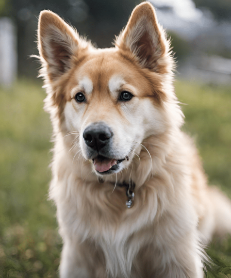
大型金毛哈士奇混血犬 Goberian 混血
金毛寻回犬与西伯利亚哈士奇的混血——友善活泼，拥有金毛的亲切和哈士奇的精力，需要大量运动。
 小型
小型西高地贵宾混血犬 Westiepoo 混血
西高地白梗与贵宾犬的混血——小型低脱毛，充满西高地梗的大胆个性和贵宾犬的智慧。
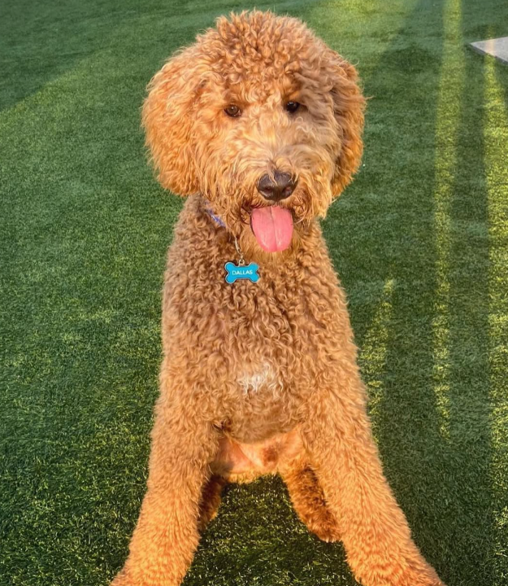
大型拳师贵宾混血犬 Boxerdoodle 混血
拳师犬与贵宾犬的混血——充满活力，聪明友善，拥有拳师犬的活泼和贵宾犬的智慧。
 大型
大型金毛拉布拉多混血犬 Goldador 混血
金毛寻回犬与拉布拉多的混血——两种最受欢迎家庭犬的结合，友善温柔，极适合家庭。
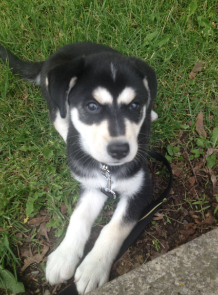
大型拉布拉多哈士奇混血犬 Labsky 混血
拉布拉多与西伯利亚哈士奇的混血——友善活泼，将拉布拉多的热情与哈士奇的精力结合，需要大量运动。
 中型
中型边牧贵宾混血犬 Bordoodle 混血
边境牧羊犬与贵宾犬的混血——极高智慧的组合，需要充分的大脑和体力刺激，低脱毛。
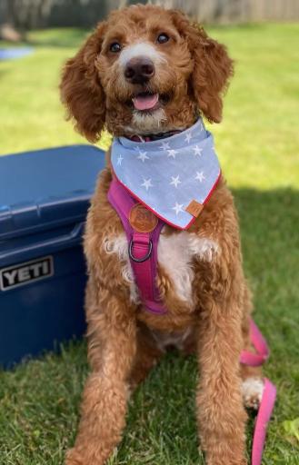
中型英国跳猎贵宾混血犬 Springerdoodle 混血
英国跳猎犬与贵宾犬的混血——友善活泼，低脱毛，将跳猎犬的运动能力与贵宾犬的聪明结合。
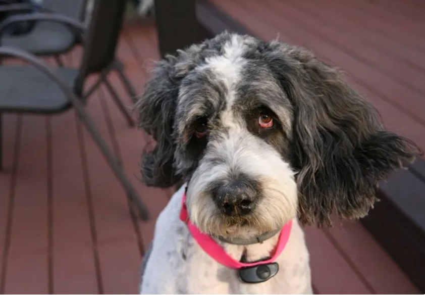
大型圣伯纳贵宾混血犬 Saint Berdoodle 混血
圣伯纳犬与贵宾犬的混血——大型温柔的低脱毛组合，将圣伯纳犬的甜美与贵宾犬的智慧完美融合。
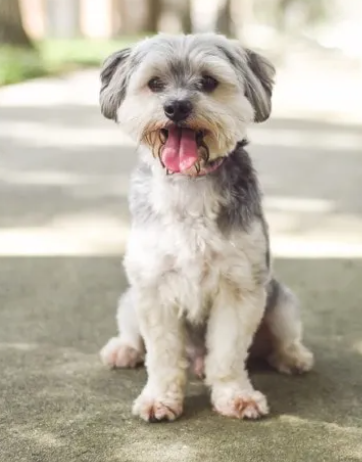
中型哈士奇贵宾混血犬 Huskydoodle 混血
西伯利亚哈士奇与贵宾犬的混血——活泼聪明，可能低脱毛，充满哈士奇的活力和贵宾犬的智慧。
 小型
小型腊肠贵宾混血犬 Doxiepoo 混血
腊肠犬与贵宾犬的混血——小型聪明，可能继承腊肠犬的长身体，低脱毛，性格活泼。
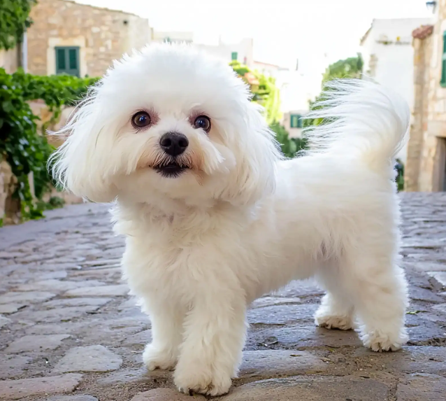
小型马耳他比熊混血犬 Maltichon 混血
马耳他犬与比熊犬的混血——小型友善，白色柔软毛发，低脱毛，适合各类家庭。
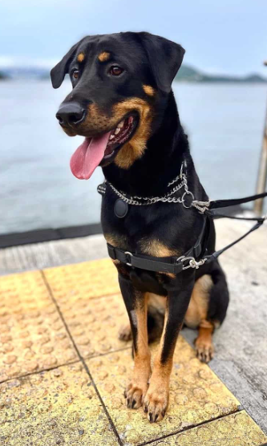
大型罗威纳拉布拉多混血犬 Rottador 混血
罗威纳犬与拉布拉多的混血——大型友善，将罗威纳犬的忠诚与拉布拉多的热情结合，需要充分训练。
 小型
小型贵宾比熊混血犬 Poochon 混血
贵宾犬与比熊犬的混血——小型可爱，低脱毛，双重温柔个性，适合各类家庭。
 中型
中型软毛麦色梗贵宾混血犬 Whoodle 混血
软毛麦色梗与贵宾犬的混血——小到中型低脱毛，活泼聪明，继承了麦色梗的温柔和贵宾犬的智慧。
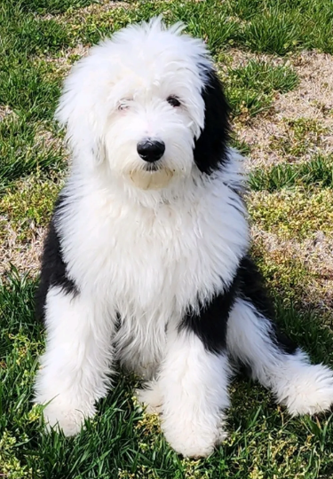
大型德牧贵宾混血犬 Shepadoodle 混血
德国牧羊犬与贵宾犬的混血——聪明工作型低脱毛混血，精力充沛，适合活跃家庭。
 大型
大型边牧拉布拉多混血犬 Borador 混血
边境牧羊犬与拉布拉多的混血——世界上最聪明的犬种之一与最友善犬种的组合，精力充沛需大量运动。
 小型
小型巴哥贵宾混血犬 Pugapoo 混血
巴哥犬与贵宾犬的混血——小型可爱，继承巴哥犬的幽默个性和贵宾犬的智慧，可能改善巴哥犬的呼吸问题。
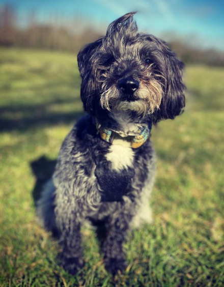
小型杰克罗素贵宾混血犬 Jackadoodle 混血
杰克罗素梗与贵宾犬的混血——小型活泼，充满梗犬精神，低脱毛，适合活跃主人。
G3
 小型
小型瓦伦西亚㹴 Valencian Terrier
西班牙瓦伦西亚地区的活泼捕鼠梗（Gos Rater Valencià）——体型紧凑灵活，在西班牙境外极为罕见。
FCI G3
杰克罗素梗
约翰·罗素牧师培育的无畏猎狐梗——体型紧凑、聪明机智、精力充沛，小身躯蕴藏巨大能量。
 大型
大型拳师拉布拉多混血犬 Boxador 混血
拳师犬与拉布拉多的混血——活泼爱玩的混血，集两者的热情和力量，是出色的家庭犬。
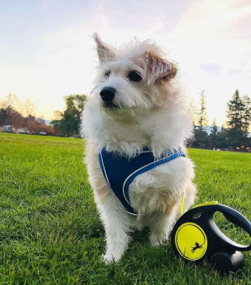
小型柯基贵宾混血犬 Corgipoo 混血
柯基犬与贵宾犬的混血——聪明活泼，低脱毛，拥有柯基的机灵和贵宾犬的智慧。
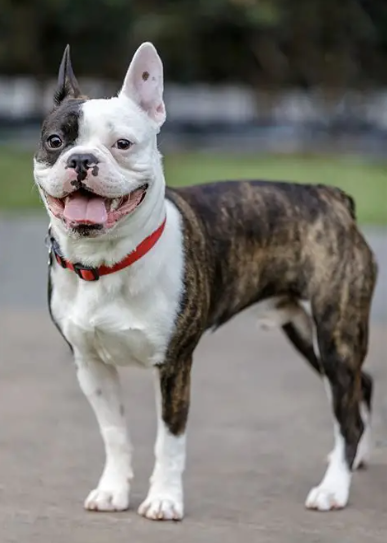
小型法斗波士顿梗混血犬 Frenchton 混血
法国斗牛犬与波士顿梗的混血——城市犬的完美组合，健康问题少于纯种法斗，活泼友善。
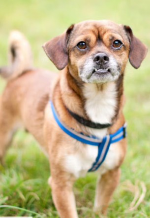
小型吉娃娃巴哥混血犬 Chug 混血
吉娃娃与巴哥犬的混血——小型活泼，拥有两者的个性，气质欢快，适合城市生活。
 小型
小型比格骑士混血犬 Beaglier 混血
比格犬与骑士查理士王猎犬的混血——温和亲切，适应能力强，是出色的伴侣犬。
 小型
小型马耳他西施混血犬 Mal-Shi 混血
马耳他犬与西施犬的混血——小型可爱，继承两者的温柔性格，适合作伴侣犬。
 小型
小型腊肠柯基混血犬 Dorgi 混血
腊肠犬与柯基犬的混血——英国女王伊丽莎白二世创造的混血犬，活泼可爱，低矮有趣。
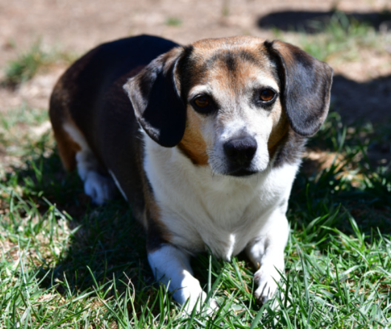
小型吉娃娃比格混血犬 Cheagle 混血
吉娃娃与比格犬的混血——小型活泼，集两者的好奇和精力，需要适当的运动。
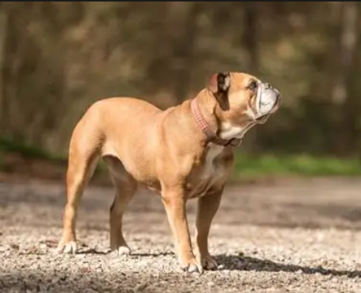
大型英斗拉布拉多混血犬 Bullador 混血
英国斗牛犬与拉布拉多的混血——稳重的斗牛犬与活泼的拉布拉多结合，友善且适应能力强。
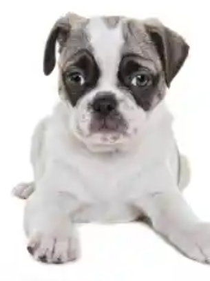
小型波士顿梗巴哥混血犬 Bugg 混血
波士顿梗与巴哥犬的混血——小型活泼，结合了两者的友善气质和城市适应能力。
 大型
大型德牧哈士奇混血犬 Gerberian Shepsky 混血
德国牧羊犬与西伯利亚哈士奇的混血——两种工作犬的强强联合，精力充沛，需要大量运动和训练。
 大型
大型德牧拉布拉多混血犬 Sheprador 混血
德国牧羊犬与拉布拉多的混血——两种最受欢迎工作犬家庭犬的结合，聪明友善，需要充分运动。
 小型
小型博美贵宾混血犬 Pomapoo 混血
博美犬与贵宾犬的混血——小型可爱，毛茸茸，低脱毛，活泼聪明，适合公寓生活。
 小型
小型杰克罗素巴哥混血犬 Jug 混血
杰克罗素梗与巴哥犬的混血——小型有趣，结合了两者的个性，气质活泼欢快。
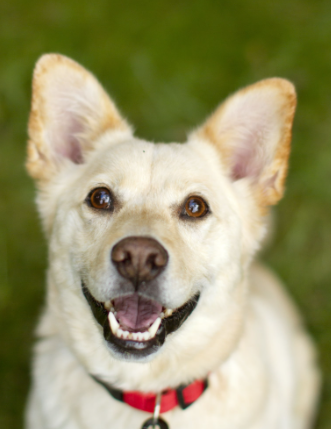
中型柯基拉布拉多混血犬 Corgidor 混血
柯基犬与拉布拉多的混血——友善活泼，继承了柯基的机灵和拉布拉多的热情。
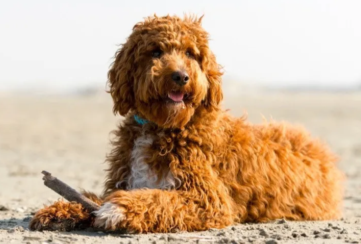
大型爱尔兰雪达贵宾混血犬 Irish Doodle 混血
爱尔兰雪达犬与贵宾犬的混血——友善优雅，继承了爱尔兰雪达犬的红色毛发，低脱毛。
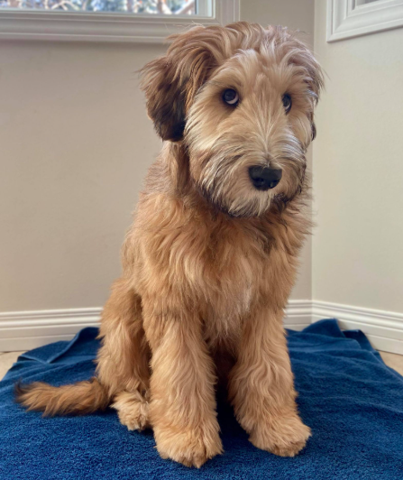
中型威尔士梗贵宾混血犬 Woodle 混血
威尔士梗与贵宾犬的混血——小型活泼，低脱毛，梗犬精神与贵宾犬聪明的完美结合。
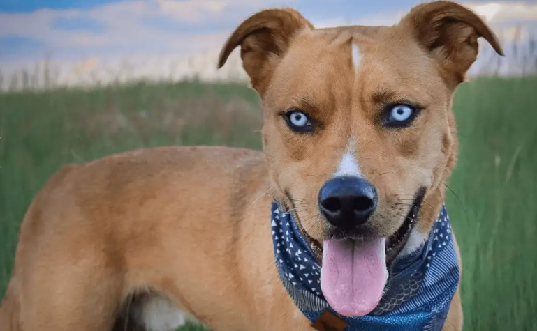
大型比特哈士奇混血犬 Pitsky 混血
美国比特犬与西伯利亚哈士奇的混血——中大型活泼，需要充分的运动和社会化，对主人极度忠诚。
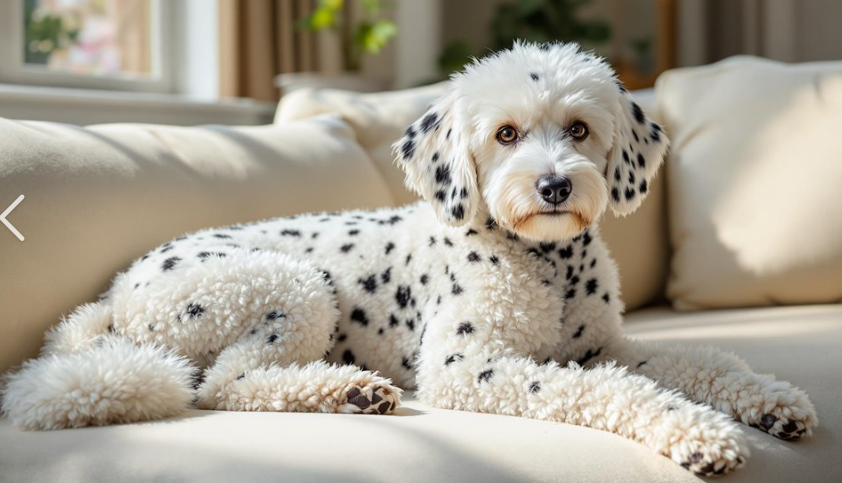
大型大麦丁贵宾混血犬 Dalmadoodle 混血
大麦丁犬与贵宾犬的混血——聪明活泼，可能继承大麦丁犬的斑点花纹，低脱毛。
 小型
小型吉娃娃腊肠混血犬 Chiweenie 混血
吉娃娃与腊肠犬的混血——小型活跃，继承了两者的大胆个性，适合作伴侣犬。
 小型
小型博美吉娃娃混血犬 Pomchi 混血
博美犬与吉娃娃的混血——超小型活泼，将两者的大胆个性结合，充满魅力。
 小型
小型北京贵宾混血犬 Peekapoo 混血
北京犬与贵宾犬的混血——小型皇家气质，低脱毛，继承北京犬的庄重和贵宾犬的聪明。
 小型
小型骑士贵宾比熊混血犬 Cavapoochon 混血
骑士查理士王猎犬、贵宾犬与比熊犬的三方混血——三种受欢迎伴侣犬的组合，永远保持幼犬般的外貌。
 中型
中型比格英斗混血犬 Beabull 混血
比格犬与英国斗牛犬的混血——将比格的好奇心与斗牛犬的稳重相结合，小型好奇，适合家庭。
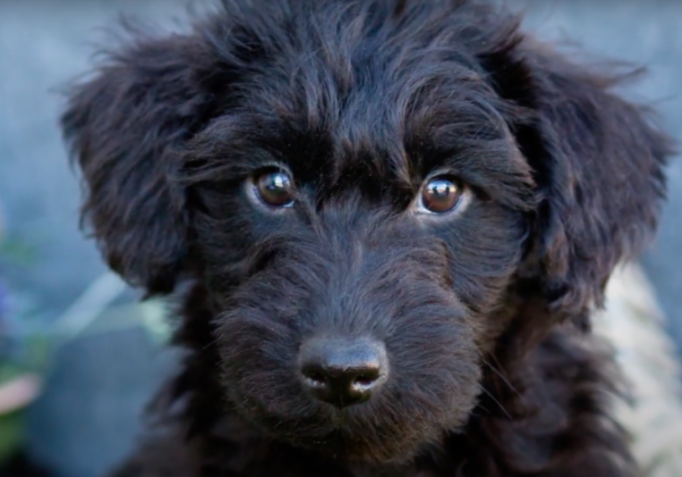
小型苏格兰梗贵宾混血犬 Scoodle 混血
苏格兰梗与贵宾犬的混血——小型活泼，低脱毛，独特的苏格兰气质与贵宾犬的聪明相结合。
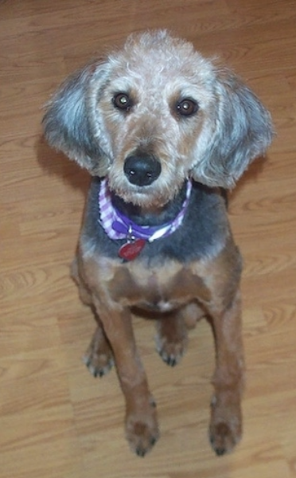
大型艾尔谷贵宾混血犬 Airedoodle 混血
艾尔谷梗与贵宾犬的混血——集两者的聪明才智，毛发可能减少脱毛，精力充沛，适合活跃家庭。
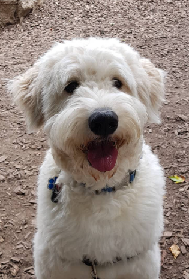
大型萨摩耶贵宾混血犬 Sammypoo 混血
萨摩耶犬与贵宾犬的混血——白色可爱，低脱毛，萨摩耶犬的微笑与贵宾犬的聪明相结合。
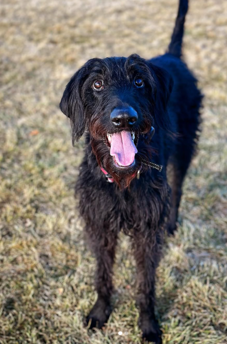
大型杜宾贵宾混血犬 Doberdoodle 混血
杜宾犬与贵宾犬的混血——聪明、警觉，将杜宾犬的工作能力与贵宾犬的低脱毛特点相结合。
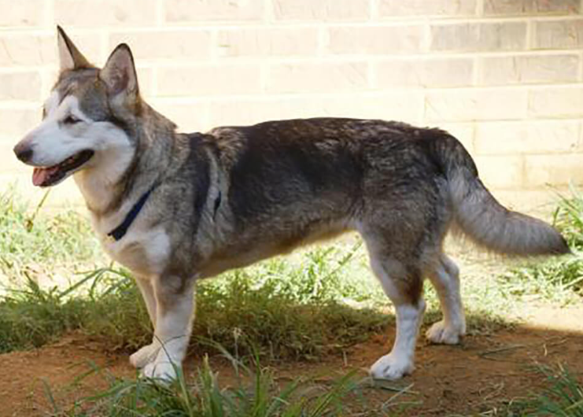
中型哈士奇柯基混血犬 Horgi 混血
西伯利亚哈士奇与柯基犬的混血——独特有趣的组合，哈士奇的外形加上柯基的短腿，活泼好动。
 大型
大型澳牧拉布拉多混血犬 Aussiedor 混血
澳大利亚牧羊犬与拉布拉多的混血——将澳牧的智慧与拉布拉多的友善结合，精力充沛，非常适合家庭。
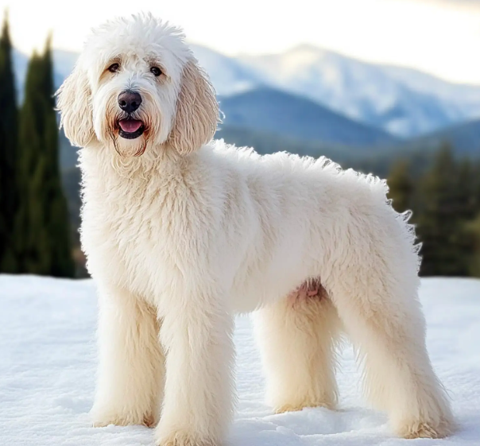
大型大白熊贵宾混血犬 Pyredoodle 混血
大白熊犬与贵宾犬的混血——大型温柔，将大白熊犬的守护本能与贵宾犬的低脱毛特点相结合。
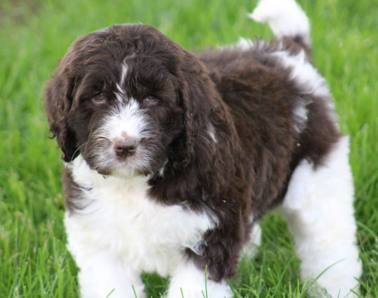
大型纽芬兰贵宾混血犬 Newfiedoodle 混血
纽芬兰犬与贵宾犬的混血——大型温柔，低脱毛，将纽芬兰犬的甜美性格与贵宾犬的智慧相结合。
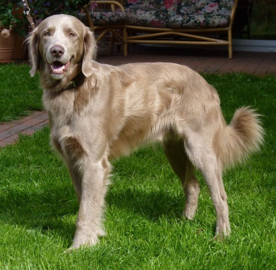
大型金毛魏玛混血犬 Goldmaraner 混血
金毛寻回犬与魏玛犬的混血——将金毛的友善与魏玛犬的运动能力相结合，精力充沛的家庭犬。
 大型
大型罗威纳哈士奇混血犬 Rottsky 混血
罗威纳犬与西伯利亚哈士奇的混血——大型精力充沛，将两种工作犬的特点结合，需要经验丰富的主人。
 小型
小型拉萨贵宾混血犬 Lhasapoo 混血
拉萨阿普索犬与贵宾犬的混血——小型聪明，低脱毛，拥有独特的个性和优雅外形。
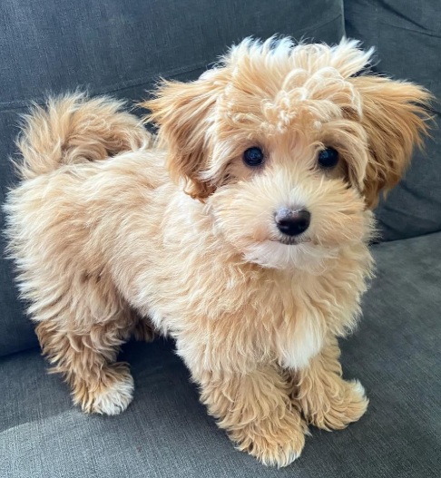
小型贵宾棉花面纱混血犬 Pooton 混血
贵宾犬与棉花面纱犬的混血——小型低脱毛，将两种友善伴侣犬的特点完美融合。
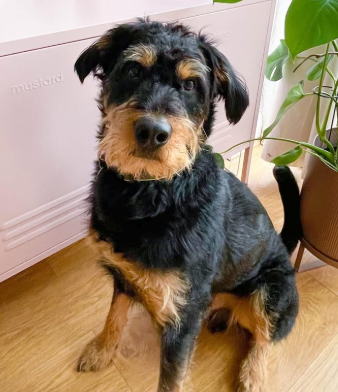
大型罗威纳贵宾混血犬 Rottle 混血
罗威纳犬与贵宾犬的混血——智慧而忠诚，低脱毛，将罗威纳犬的守护能力与贵宾犬的聪明结合。
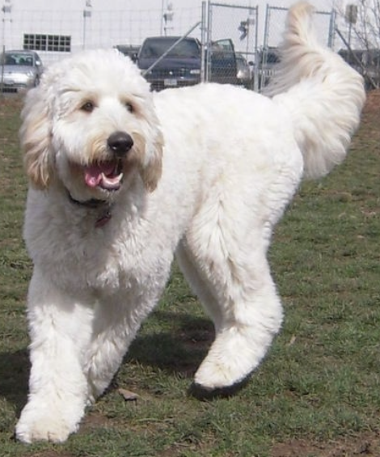
大型马士提夫贵宾混血犬 Mastidoodle 混血
马士提夫犬与贵宾犬的混血——将马士提夫的体型与贵宾犬的智慧相结合，大型但气质温和。
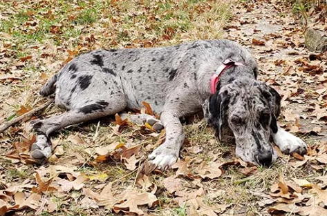
大型大丹贵宾混血犬 Great Danoodle 混血
大丹犬与贵宾犬的混血——大型低脱毛的组合，气质温和庄重，是独特的大型混血犬。
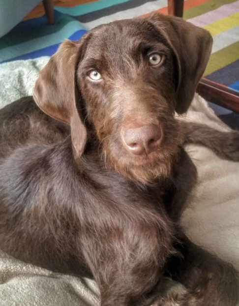
大型魏玛贵宾混血犬 Weimardoodle 混血
魏玛犬与贵宾犬的混血——将魏玛犬的优雅与贵宾犬的低脱毛特点相结合，运动型家庭犬。
 大型
大型比格拉布拉多混血犬 Beagador 混血
比格犬与拉布拉多的混血——结合了比格的嗅觉天赋和拉布拉多的训练接受能力，活跃友善。
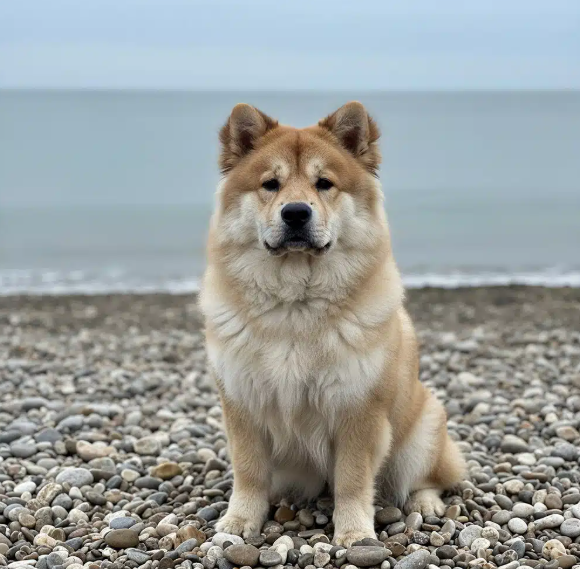
大型松狮哈士奇混血犬 Chusky 混血
松狮犬与西伯利亚哈士奇的混血——中大型犬，拥有厚实毛发，需要大量运动。
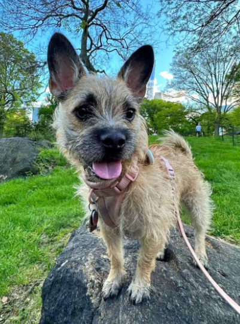
小型法斗贵宾混血犬 Froodle 混血
法国斗牛犬与贵宾犬的混血——将法斗的个性与贵宾犬的低脱毛特点相结合，小型受欢迎的混血犬。
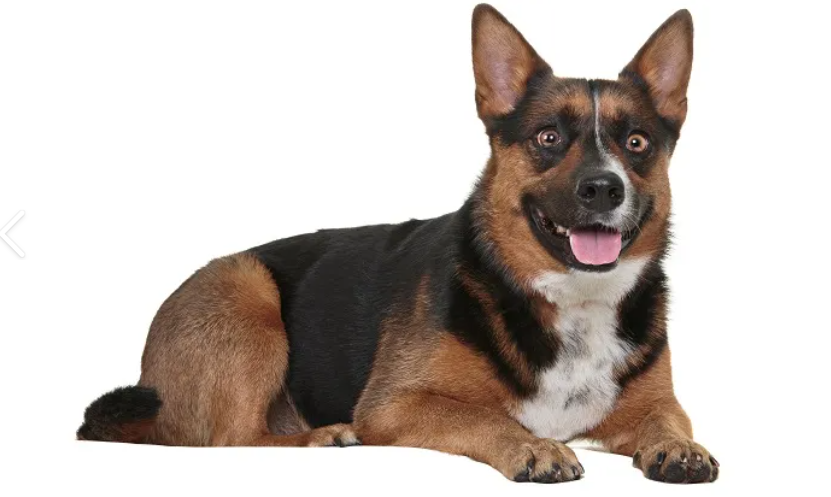
中型柯基德牧混血犬 Corman Shepherd 混血
柯基犬与德国牧羊犬的混血——将柯基的机灵与德牧的工作能力相结合，聪明且精力充沛。
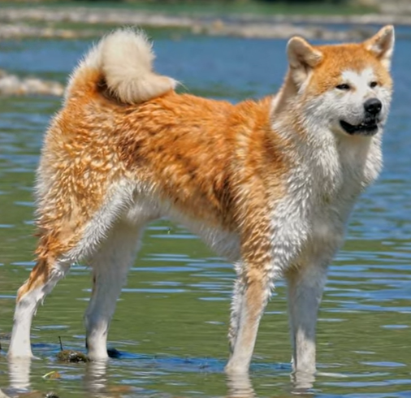
大型秋田牧羊混血犬 Akita Shepherd 混血
秋田犬与德国牧羊犬的混血——将秋田犬的忠诚尊严与德牧的工作智慧相结合，体型大，需要充分社会化。
 大型
大型金毛柯利混血犬 Gollie 混血
金毛寻回犬与柯利牧羊犬的混血——两种经典家庭犬的组合，友善温柔，非常适合有孩子的家庭。
 中型
中型哈士奇柴犬混血犬 Husky Inu 混血
西伯利亚哈士奇与柴犬的混血——两种亚洲犬的结合，独立而忠诚，外形引人注目。
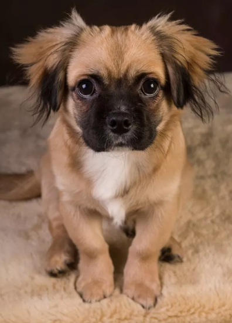
小型博美巴哥混血犬 Pom-A-Pug 混血
博美犬与巴哥犬的混血——小型有趣，充满个性，集两者的魅力于一身。
 中型
中型比格巴吉度混血犬 Bagel Hound 混血
比格犬与巴塞特猎犬的混血——继承了两者的嗅觉天赋，低矮好奇，气质悠闲。
 大型
大型巴塞特拉布拉多混血犬 Bassador 混血
巴塞特猎犬与拉布拉多的混血——悠闲的巴塞特与友善的拉布拉多相结合，体型适中，性格温顺。
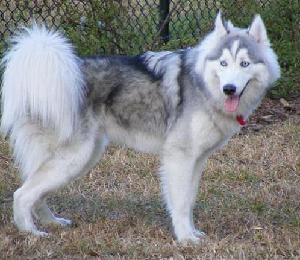
中型哈士奇爱斯基摩混血犬 Huskimo 混血
西伯利亚哈士奇与美国爱斯基摩犬的混血——两种北欧犬的组合，外形漂亮，需要大量运动。
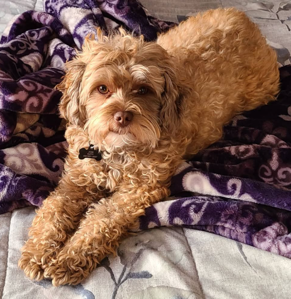
小型猴面梗贵宾混血犬 Affenpoo 混血
猴面梗与贵宾犬的混血——继承了两个亲本犬种的聪明和低脱毛特点，体型小巧，性格活泼。
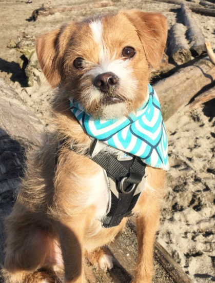
小型波士顿梗贵宾混血犬 Bossipoo 混血
波士顿梗与贵宾犬的混血——友善的城市犬，继承波士顿梗的友善气质和贵宾犬的低脱毛特点。
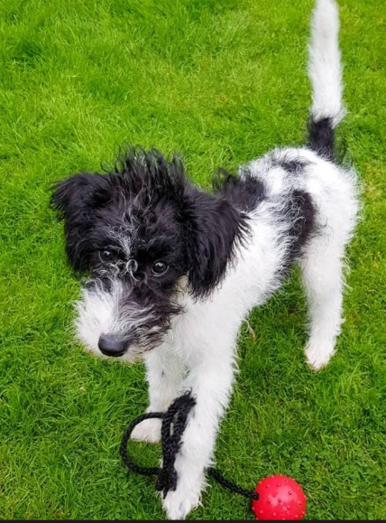
小型猎狐梗贵宾混血犬 Foodle 混血
玩具猎狐梗与贵宾犬的混血——小型活泼，充满活力，低脱毛，梗犬的精神与贵宾犬的聪明相结合。
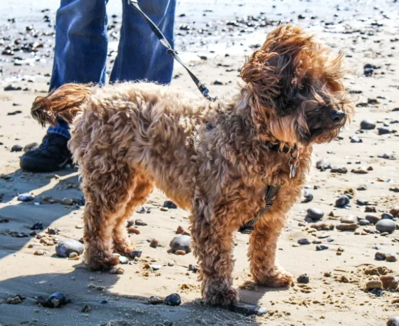
小型凯安梗贵宾混血犬 Cairnoodle 混血
凯安梗与贵宾犬的混血——活泼聪明，低脱毛，体型小巧，适合多种家庭环境。
 中型
中型英国跳猎贵宾混血犬 Spoodle 混血
英国跳猎犬与贵宾犬的混血——运动型低脱毛混血，友善活泼，适合喜爱户外活动的家庭。
 大型
大型拉布拉多魏玛混血犬 Labmaraner 混血
拉布拉多与魏玛犬的混血——运动型猎犬组合，精力充沛，需要大量户外活动。
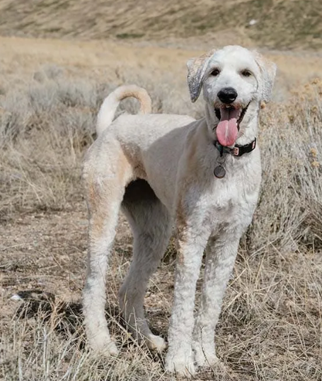
大型佛兰德牧牛贵宾混血犬 Flandoodle 混血
佛兰德斯牧牛犬与贵宾犬的混血——大型工作犬智慧的结合，精力充沛，适合经验丰富的主人。
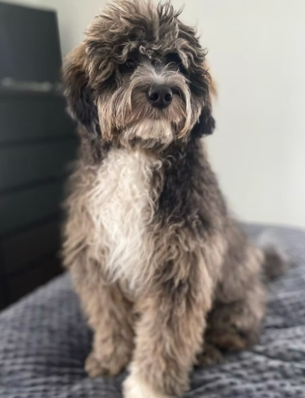
中型葡萄牙水犬贵宾混血犬 Portidoodle 混血
葡萄牙水犬与贵宾犬的混血——运动型低脱毛混血，热爱水上活动，聪明且容易训练。
鼠梗贵宾混血犬 Ratoodle 混血
鼠梗与贵宾犬的混血——小型活泼，低脱毛，梗犬的精神与贵宾犬的聪明相结合。
 大型
大型阿连特茹拉菲罗犬
葡萄牙阿连特茹平原的古老巨型守护者——欧洲最古老的摩罗索品种之一，数千年抵御狼群。
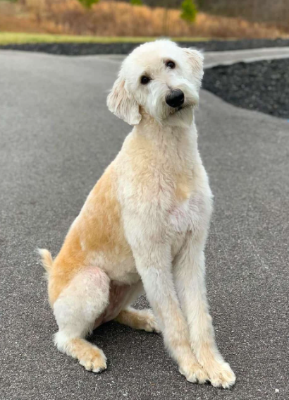
大型爱尔兰猎狼贵宾混血犬 Irish Wolfadoodle 混血
爱尔兰猎狼犬与贵宾犬的混血——大型温柔，将爱尔兰猎狼犬的高贵与贵宾犬的聪明相结合。
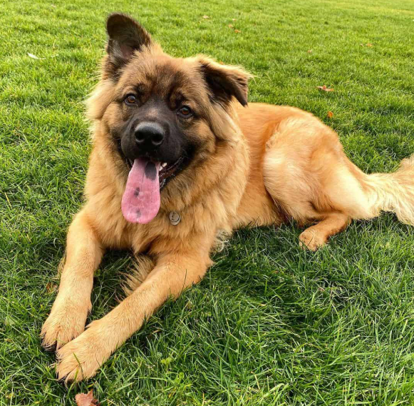
大型松狮牧羊混血犬 Chow Shepherd 混血
松狮犬与德国牧羊犬的混血——将松狮犬的庄重与德牧的工作智慧相结合，体型大，需要经验丰富的主人。
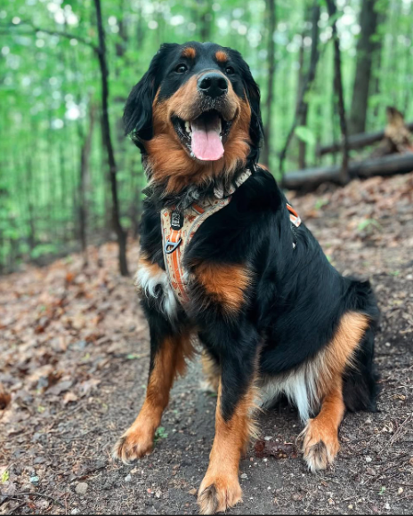
大型金毛伯恩山混血犬 Golden Mountain Dog 混血
金毛寻回犬与伯恩山犬的混血——将金毛的友善与伯恩山犬的壮美相结合，大型友善的家庭犬。
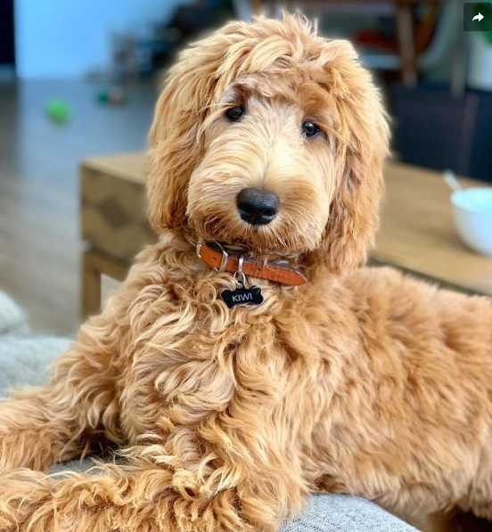
大型双贵宾混血犬 Double Doodle 混血
金毛贵宾犬与拉布拉多贵宾犬的混血——双重贵宾犬血统，极其聪明，低脱毛，性格温和。
阿富汗边牧混血犬 Afghan Collie 混血
阿富汗猎犬的优雅与边境牧羊犬的聪慧相结合，造就这款引人注目的混血犬。
阿富汗大丹混血犬 Afghan Dane 混血
融合阿富汗猎犬的优雅与大丹犬的魁梧体型，气质雄伟。
阿富汗拉布拉多混血犬 Afghan Lab 混血
阿富汗猎犬的优雅与拉布拉多的友善相结合，活泼好动。
阿富汗金毛混血犬 Afghan Retriever 混血
金毛寻回犬的温暖与阿富汗猎犬的优雅和速度相结合。
斯塔福拉布拉多混血犬 American Staffordshire Labrador 混血
美国斯塔福梗的力量与拉布拉多的友善——忠诚且易于训练。
阿拉斯加拉布拉多混血犬 Arctic Labrador 混血
阿拉斯加雪橇犬的耐力与拉布拉多的温暖和可训练性。
 中型
中型巴吉度比格混血犬 Bagle Hound 混血
巴吉度猎犬的低调性格与比格犬灵敏的嗅觉和友善。
巴吉度贵宾混血犬 Bassetoodle 混血
巴吉度猎犬的悠闲与贵宾犬的聪慧及低脱毛被毛。
伯恩山纽芬兰混血犬 Bernewfie 混血
伯恩山犬的忠诚与纽芬兰犬温柔巨人般的甜美。
古牧贵宾混血犬 Boodle 混血
古代英国牧羊犬的风采与贵宾犬的聪慧和低脱毛。
边牧喜乐蒂混血犬 Border Sheepdog 混血
边境牧羊犬与喜乐蒂——两种聪慧出众的牧羊犬。
边牧柯基混血犬 Borgi 混血
边境牧羊犬的牧羊智慧与柯基犬紧凑的身材和大个性。
 大型
大型苏俄灵缇混血犬 Borzoi Greyhound 混血
两种优雅视觉猎犬的结合，速度与优雅至上。
苏俄拉布拉多混血犬 Borzoi Lab 混血
苏俄牧羊犬的优雅与拉布拉多的温暖和友善可训练性。
苏俄贵宾混血犬 Borzoi Poodle 混血
苏俄牧羊犬的优雅与速度，加上贵宾犬的聪慧和低脱毛。
拳师贵宾混血犬 Boxerpoo 混血
拳师犬的活泼与迷你贵宾犬的聪慧和适合公寓的体型。
拳师德牧混血犬 Box Shepherd 混血
拳师犬的忠诚活力与德国牧羊犬的聪慧和护卫性。
拳师哈士奇混血犬 Boxsky 混血
拳师犬的无穷活力与西伯利亚哈士奇醒目的外形和耐力。
布里贵宾混血犬 Briard Poodle 混血
布里牧羊犬的牧羊智慧与贵宾犬的可训练性和波浪被毛。
牛头梗拉布拉多混血犬 Bull Labrador 混血
牛头梗的坚韧与拉布拉多的温暖和可训练性。
斗牛沙皮混血犬 Bull Pei 混血
英国斗牛犬的沉稳与中国沙皮犬的忠诚和褶皱魅力。
日本狆吉娃娃混血犬 Chin-Wa 混血
日本狆的优雅与吉娃娃忠诚的陪伴，浓缩于小巧身躯。
吉娃娃蝴蝶混血犬 Chion 混血
吉娃娃的大胆忠诚与蝴蝶犬优美的外形和聪慧。
边牧金毛混血犬 Coltriever 混血
边境牧羊犬的牧羊智慧与金毛寻回犬的温暖和友善。
 超大型
超大型大丹獒犬混血犬 Daniff 混血
大丹犬与獒犬结合，成就温和、魁梧而忠诚的伴侣。
腊肠比格混血犬 Doxle 混血
腊肠犬的执着与比格犬的社交天性和嗅觉——好奇的嗅觉猎犬。
爱斯基摩哈士奇混血犬 Eskie Husky 混血
美国爱斯基摩犬的美丽与西伯利亚哈士奇的耐力——醒目的北极混血犬。
爱斯基摩杰克混血犬 Eskijack 混血
美国爱斯基摩犬的优雅与杰克罗素梗爆发性的活力和冲劲。
爱斯基摩尖嘴混血犬 Eskimo Spitz 混血
美国爱斯基摩犬与日本尖嘴犬——两种白色尖嘴伴侣犬的结合。
爱斯基摩贵宾混血犬 Eskipoo 混血
美国爱斯基摩犬的蓬松与贵宾犬的聪慧和低脱毛被毛。
平毛贵宾混血犬 Flat-Coat Poodle 混血
平毛寻回犬永恒的欢乐与贵宾犬的聪慧和低脱毛。
平毛金拉混血犬 Flat-Coated Goldador 混血
平毛寻回犬的欢乐与拉布拉多的友善——双重寻回犬血统。
法斗贵宾混血犬 French Boodle 混血
法国斗牛犬的魅力与贵宾犬的聪慧——理想的紧凑型公寓伴侣。
法斗比格混血犬 Frengle 混血
法国斗牛犬的魅力与比格犬的社交天性——亲和且适合家庭。
法斗巴哥混血犬 Frug 混血
法国斗牛犬与巴哥犬——两种褶皱短鼻伴侣犬的结合。
金毛罗威纳混血犬 Golden Rottie 混血
金毛寻回犬的温暖与罗威纳犬忠诚自信——家庭护卫犬。
金毛德牧混血犬 Golden Shepherd 混血
金毛寻回犬的温暖与德国牧羊犬的聪慧——出色的家庭犬。
大丹拉布拉多混血犬 Great Labradane 混血
大丹犬温柔巨人般的气质与拉布拉多的友善和社交性。
大白熊德牧混血犬 Great Shepherd 混血
大白熊犬沉稳的护卫本能与德国牧羊犬的聪慧——雄伟的守护者。
大瑞士罗威纳混血犬 Great Swiss Rottweiler 混血
大瑞士山地犬与罗威纳犬的力量——阿尔卑斯工作犬传承。
格里芬贵宾混血犬 Griffon Poodle 混血
布鲁塞尔格里芬犬古怪的表情与贵宾犬的聪慧——独具魅力。
哈瓦那比熊混血犬 Havachon 混血
哈瓦那犬的温暖与比熊犬的活泼——蓬松低脱毛的伴侣犬。
哈瓦那马耳他混血犬 Havamalt 混血
哈瓦那犬的温暖与马耳他犬的优雅——丝滑温柔的小型伴侣犬。
 大型
大型哈士奇拉布拉多混血犬 Huskador 混血
西伯利亚哈士奇的活力与拉布拉多的友善——精力充沛且爱社交。
意灵贵宾混血犬 Iggy Poo 混血
意大利灵缇的优雅与贵宾犬的聪慧和低脱毛被毛。
意灵比格混血犬 Italian Greybeagle 混血
意大利灵缇的速度与比格犬爱社交的嗅觉——敏捷的嗅觉猎犬。
意灵吉娃娃混血犬 Italian Greyhuahua 混血
意大利灵缇的优雅与吉娃娃的大胆忠诚——古老的伴侣犬杂交。
荷兰毛狮哈士奇混血犬 Keeshond Husky 混血
荷兰毛狮犬的温暖与西伯利亚哈士奇的耐力——醒目的北极尖嘴混血犬。
荷兰毛狮贵宾混血犬 Keeshond Poodle 混血
荷兰毛狮犬温暖的社交性与贵宾犬的聪慧和低脱毛。
荷兰毛狮德牧混血犬 Keeshond Shepherd 混血
荷兰毛狮犬的温暖与德国牧羊犬的聪慧——警觉忠诚的伴侣犬。
拉布拉多罗威纳混血犬 Labrottie 混血
拉布拉多的友善与罗威纳犬忠诚自信——家庭护卫犬。
马犬荷兰牧混血犬 Mali-Dutchie 混血
比利时马犬与荷兰牧羊犬——精英工作犬的结合，仅适合专业人士。
比利时马犬混血犬 Malinois X 混血
比利时马犬与德国牧羊犬——顶级工作犬，仅适合专业人士。
迷你巴哥比格混血犬 Miniature Puggle 混血
袖珍版巴哥犬与比格犬杂交——小巧身躯中的紧凑魅力。
马约贵宾混血犬 Morkie Poo 混血
马耳他犬、约克夏梗与贵宾犬的三重杂交，可爱满分。
马尔约克夏混血犬 Morkshire 混血
马耳他犬温柔的魅力与约克夏梗大胆的个性——受欢迎的小型犬。
纽芬兰贵宾混血犬 Newfypoo 混血
纽芬兰犬水上救援巨人的体格与贵宾犬的聪慧和低脱毛。
诺福克诺维奇混血犬 Norfolwich 混血
诺福克梗与诺维奇梗——几乎相同的梗类姊妹犬的结合。
诺维奇贵宾混血犬 Norwich Poo 混血
诺维奇梗活泼的精神与贵宾犬的聪慧和低脱毛被毛。
诺维奇雪纳瑞混血犬 Norwich Schnauzer 混血
诺维奇梗与迷你雪纳瑞——两种刚毛低脱毛的梗类。
诺维奇约克混血犬 Norwich Yorkie 混血
诺维奇梗与约克夏梗——两种活泼的英国梗的结合。
 小型
小型沙皮巴哥混血犬 Ori-Pei 混血
中国沙皮犬的忠诚与巴哥犬的魅力——紧凑褶皱的伴侣犬。
蝴蝶博美混血犬 Paperanian 混血
蝴蝶犬优美的外形与博美犬蓬松的魅力——小巧而聪慧。
蝴蝶比熊混血犬 Papichon 混血
蝴蝶犬的聪慧与比熊犬的温暖和低脱毛被毛。
蝴蝶贵宾混血犬 Papipoo 混血
蝴蝶犬顶尖的玩具犬智慧与贵宾犬的可训练性——聪慧的小型伴侣犬。
贵宾比格混血犬 Poogle 混血
贵宾犬的聪慧与比格犬的社交天性——友善低脱毛的家庭犬。
葡水贵宾混血犬 Portuguese Doodle 混血
葡萄牙水犬与贵宾犬——两种爱水的工作犬的结合。
巴哥拉布拉多混血犬 Puggador 混血
巴哥犬的温暖与拉布拉多的友善——平易近人且爱社交。
巴哥比格混血犬（比格回交） Puggle Beagle Backcross 混血
巴哥比格混血犬回交比格，更多比格特征并降低短鼻风险。
巴哥比格混血犬（巴哥回交） Puggle Pug Backcross 混血
巴哥比格混血犬回交巴哥，更多巴哥个性和紧凑褶皱魅力。
沙皮比格混血犬 Sharp Eagle 混血
沙皮犬的忠诚与比格犬的好奇和嗅觉——褶皱的嗅觉猎犬。
沙皮比特混血犬 Sharpull 混血
中国沙皮犬的忠诚与比特犬的力量——仅适合有经验的主人。
喜乐蒂蝴蝶混血犬 Shelillon 混血
喜乐蒂的聪慧与蝴蝶犬优美的外形——优雅而聪慧。
喜乐蒂贵宾混血犬 Sheltidoodle 混血
喜乐蒂的牧羊智慧与贵宾犬的可训练性——出色的贵宾混血。
 大型
大型德牧罗威纳混血犬 Shepweiler 混血
德国牧羊犬的聪慧与罗威纳犬的力量——适合专业人士的强力护卫犬。
德牧边牧混血犬 Shollie 混血
德国牧羊犬的忠诚与边境牧羊犬卓越的聪慧——精力旺盛的混血犬。
哈士奇贵宾混血犬 Siberpoo 混血
西伯利亚哈士奇醒目的美貌与贵宾犬的聪慧和低脱毛被毛。
 中型
中型史宾格可卡混血犬 Sprocker 混血
史宾格犬的活力与可卡犬温柔的天性——深受喜爱的英国混血犬。
史宾格贵宾混血犬 Sproodle 混血
史宾格犬的热情与贵宾犬的聪慧和低脱毛被毛。
斯塔福罗威纳混血犬 Staffweiler 混血
斯塔福斗牛梗的坚韧与罗威纳犬的力量——适合有经验的主人。
斯塔福斗牛混血犬 Staffy Bull Bulldog 混血
斯塔福斗牛梗与英国斗牛犬——紧凑的英国斗牛犬种。
西施比熊混血犬 Teddy Bear Dog (Zuchon) 混血
西施犬与比熊犬——混血犬界的活体毛绒玩具。
特弗伦哈士奇混血犬 Tervuren Husky 混血
比利时特弗伦犬的牧羊智慧与西伯利亚哈士奇的耐力和美貌。
 大型
大型特弗伦德牧混血犬 Tervuren Shepherd 混血
比利时特弗伦犬与德国牧羊犬——精英牧羊犬的结合。
玩具猎狐腊肠混血犬 Tox 混血
玩具猎狐梗的大胆活力与腊肠犬的执着——小巧的双重猎手。
维兹拉魏玛混血犬 Vizmaraner 混血
维兹拉犬金锈色的优雅与魏玛犬运动般的优美——贵族猎手。
维兹拉贵宾混血犬 Vizsladoodle 混血
维兹拉犬粘人的忠诚与贵宾犬的聪慧和低脱毛被毛。
魏玛拉布拉多混血犬 Weimador 混血
魏玛犬运动般的优雅与拉布拉多的友善——活跃的家庭犬。
刚毛猎狐贵宾混血犬 Wire Foxoodle 混血
刚毛猎狐梗大胆的个性与贵宾犬的聪慧和低脱毛被毛。
刚毛猎狐杰克混血犬 Wire Jack 混血
刚毛猎狐梗大胆的精神与杰克罗素梗爆发性的活力——梗类爱好者之选。
克罗地亚牧羊犬 Croatian Shepherd Dog
克罗地亚古老的卷毛牧羊犬——1374年就有文献记载，始终是黑色，在野外不知疲倦。
FCI G1
 大型
大型荷兰牧羊犬 Dutch Shepherd
荷兰虎纹全能工作犬——唯一拥有虎斑被毛的牧羊犬，正迅速成为全球警务和军事单位的首选。
 大型
大型东西伯利亚莱卡犬 East Siberian Laika
俄罗斯最大的莱卡犬——西伯利亚原住民数百年来的猎熊、猎麋鹿伙伴，泰加林中的全能猎手。
 小型
小型英国玩具梗 English Toy Terrier
英国濒危的微型梗犬——全球每年仅注册不足300只，外形优雅，内心是百分百的梗犬。
 中型
中型爱沙尼亚猎犬 Estonian Hound
爱沙尼亚唯一的本土犬种——苏联时代政府指令下培育的紧凑型嗅觉猎犬，声音悠扬，意志坚定。
 中型
中型芬兰猎犬 Finnish Hound
芬兰最受欢迎的犬种——欢快、声音悦耳的野兔追踪者，穿越北欧冬季雪原锲而不舍。
 中型
中型法国史宾格犬 French Spaniel
法国最古老的猎犬——14世纪的指示寻回猎鸟犬，沉稳易训，在魁北克同样深受喜爱。
 大型
大型西班牙灵缇 Galgo Español
西班牙的古老灵缇——2000年的追逐血统，闪电速度与温和沉静的沙发陪伴犬气质。
 大型
大型加斯科涅圣东日犬 Gascon Saintongeois
法国贵族气质的大型成群猎犬——声音洪亮深沉，专为骑马大猎的法式传统而生。
 中型
中型德国猎犬 German Hound
德国唯一留存的布拉克猎犬——稀有的三色威斯特法伦嗅觉追踪犬，中世纪传承至今。
德国长毛指示犬 Deutsch Langhaar
德国丝毛被毛万能猎犬——优雅的全能猎犬，陆地与水域兼备。
 中型
中型德国猎鹌鹑犬 German Spaniel
德国强壮的森林猎犬——专为持牌猎人培育的激飞、追踪和寻回专家。
 小型
小型德国斯皮茨犬 German Spitz
欧洲最古老犬种之一——活泼忠诚，五种体型，博美犬的祖先。
 中型
中型波兰猎犬 Gończy Polski
波兰历史悠久的群猎犬——黑褐色嗅觉猎犬，14世纪有文字记录，二战后几近灭绝。
 大型
大型大型黑白法英猎犬 Grand Anglo-Français Blanc et Noir
法国卓越的黑白群猎犬——英国速度与法国嗅觉耐力结合，专为骑马大猎而生。
 大型
大型大型白橙法英猎犬 Grand Anglo-Français Blanc et Orange
三种大型法英猎犬中最罕见的——白橙色大猎群猎犬。
 大型
大型大型三色法英猎犬 Grand Anglo-Français Tricolore
法英猎犬系列中数量最多的变种——三色大猎群猎犬，法国猎犬嗅觉与英国速度的结合。
 大型
大型加斯科涅大蓝猎犬 Great Gascony Blue
法国最古老猎犬之一——雄伟的蓝色斑驳被毛，亨利四世心爱的猎犬，冷鼻追踪无与伦比。
 大型
大型大旺代格里芬猎犬 Grand Griffon Vendéen
最大的旺代粗毛猎犬——小巴塞特格里芬旺代犬的祖先，专为法国西部灌木丛猎野猪而生。
 大型
大型格陵兰犬 Greenland Dog
世界上最古老工作犬之一——4000年因纽特传承的强壮北极雪橇犬，参与过南极探险。
 中型
中型加斯科涅蓝色格里芬猎犬 Blue Gascony Griffon
粗毛加斯科涅蓝——带有独特蓝色斑驳花纹的稀有法国刚毛嗅觉猎犬，专为密集灌丛狩猎而生。
 中型
中型布列塔尼鹿色格里芬猎犬
法国布列塔尼古老刚毛嗅猎犬——曾为王室猎狼，二战后几近灭绝，今已复兴，以执着鼻力和欢乐性情著称。
 中型
中型尼韦奈格里芬猎犬 Griffon Nivernais
莫尔旺高地的狼灰色粗毛猎犬——法国最古老品种之一，曾几近灭绝后重建。
 大型
大型汉诺威猎犬 Hanoverian Scent Hound
德国精英血迹追踪犬——沉稳强壮，能跟踪40小时前留下的伤猎踪迹，专属于持牌猎人。
 巨型
巨型巴西獒犬 Fila Brasileiro
巴西的至高守护者——力量强大，对家人极度忠诚，对陌生人天生高度警惕，世界上最具保护性的犬种之一。
 大型
大型南俄罗斯牧羊犬 South Russian Shepherd Dog
乌克兰草原的蓬松巨型护卫犬——数百年来无畏地保护羊群免受狼和熊侵害，极度独立。
 大型
大型托尔尼亚克犬 Bosnian and Herzegovinian - Croatian Shepherd Dog
波斯尼亚和克罗地亚的古老山地守护犬，有超过千年的文献记载历史——比大多数牲畜护卫犬性格更冷静温和。
 小型
小型德国猎犬梗 German Hunting Terrier
德国无畏的全能猎梗——可追猎野猪、入地捕獾、追踪血迹、找回猎物，繁育必须通过工作测试。
G5
 中型
中型雅库特莱卡犬 Yakutian Laika
俄罗斯雅库特地区的古老北极雪橇与猎犬——世界上最古老的雪橇犬之一，2019年获FCI认可。
 中型
中型西伯利亚西部莱卡犬 West Siberian Laika
俄罗斯最具遗传原始性的猎犬——在西伯利亚针叶林中追猎熊、麋鹿和貂，耐寒至零下50℃。
 中型
中型席勒猎犬 Schillerstövare
瑞典最快、最优雅的猎犬——以棕黑色毛发和雪地飞奔速度著称，悦耳的猎犬声传遍斯堪的纳维亚山林。
 中型
中型蓬托德梅尔猎犬 Pont-Audemer Spaniel
法国稀有的诺曼底水猎犬——"沼泽小丑"，欢乐的卷毛多用途猎犬，在湿地和沼泽地带表现卓越。
 中型
中型斯莫兰猎犬 Smålandsstövare
瑞典最古老的本土猎犬——来自斯莫兰省的坚韧黑褐色嗅觉猎犬，数百年来穿越岩石森林追踪野兔和狐狸。
 中型
中型斯洛伐克猎犬 Slovenský Kopov
斯洛伐克勇敢的黑褐色森林猎犬——专为在茂密喀尔巴阡森林中追踪和警吠野猪而培育的坚韧嗅觉猎犬。
 大型
大型圣米格尔菲拉犬 Cão Fila de São Miguel
来自亚速尔群岛的强壮牧牛护卫犬——在圣米格尔火山岛上独立进化，专为抓握控制亚速尔大型牛群而培育。
 小型
小型日本㹴 Japanese Terrier
日本最稀有的本土㹴犬——由18世纪荷兰贸易商船带来的短毛猎狐㹴发展而来，以标志性三色被毛和活泼深情的伴侣气质著称。
 大型
大型哈萨克塔兹猎犬 Kazakh Tazy
哈萨克草原的古老视觉猎犬——迅捷优雅，深植于中亚游牧狩猎文化，传统上与金雕联合狩猎，与萨路基犬有深远的亲缘关系。
 中型
中型金塔马尼犬 Kintamani-Bali Dog
印度尼西亚唯一获FCI认证的品种——巴厘岛火山高原上的神圣古老犬种，独立优雅，拥有在东南亚原始犬中极为罕见的竖立双层被毛。
G1
 中型
中型罗马尼亚乌鸦牧羊犬 Romanian Raven Shepherd Dog
罗马尼亚稀有的黑色牧羊犬——"Corb"意为乌鸦，因其深色被毛而得名，罗马尼亚境外极为罕见。
 大型
大型米奥里蒂克牧羊犬 Romanian Mioritic Shepherd Dog
罗马尼亚古老的巨型护群犬——以著名民间歌谣《米奥里察》命名，来自喀尔巴阡山脉，蓬松威武，面对狼和熊无所畏惧。
 大型
大型西班牙獒犬 Spanish Mastiff
西班牙古老的巨型畜群守护犬——地球上最重的犬种之一，超过2000年来保护美利奴羊群免受伊比利亚狼侵害。
 中型
中型小明斯特兰德猎犬 Kleiner Münsterländer
德国优雅的中型多功能猎犬——陆地和水域均表现卓越的指示寻回犬，兼具对家人极度忠诚的家庭气质，是最易训练的猎犬之一。
 小型
小型威斯特法伦腊肠猎犬 Westphalian Dachsbracke
德国威斯特法伦的紧凑型短腿追踪猎犬——坚韧三色嗅觉猎犬，能跟踪猎物穿越最茂密地形，是瑞典德雷弗犬的直接祖先。
 中型
中型荷兰水猎犬 Wetterhoun
荷兰弗里斯兰水犬——来自弗里斯兰运河的强韧含油卷毛猎獭犬，地球上最稀有的FCI犬种之一，荷兰珍贵的文化遗产。
 大型
大型光毛牧羊犬 Collie Smooth
穿短毛的粗毛牧羊犬——同样出色的智慧、忠诚和温柔家庭性格，美容护理需求大幅降低。稀有的隐藏宝藏。
澳大利亚凯尔皮犬 Australian Kelpie
澳大利亚不知疲倦的牧羊犬——出色的工作意志、无限的活力和忠诚的工作精神。
澳大利亚短尾牧牛犬 Australian Stumpy Tail Cattle Dog
澳大利亚天然短尾牧牛犬——拥有天生截短外形尾巴的原版牧牛犬，驱牛热情强烈。
比利时牧羊犬 Belgian Shepherd
FCI认定的四个变种——格罗嫩达尔、特武伦、马里努阿和拉坎诺瓦。聪明、运动感强、忠诚。
阿登牧牛犬 Bouvier des Ardennes
比利时阿登山区强壮的牧牛犬——粗毛、无畏、充满工作热情。
马略卡牧羊犬 Majorca Shepherd Dog
马略卡岛的多功能黑色牧羊犬——来自巴利阿里群岛的敏捷、忠诚的牧羊和护卫犬。
喀尔巴阡牧羊犬 Romanian Carpathian Shepherd Dog
罗马尼亚古老的狼灰色山地守护犬——几千年来专门培育以保护羊群免受狼和熊的侵害。
 大型
大型捷克斯洛伐克狼犬 Czechoslovakian Wolfdog
德国牧羊犬与喀尔巴阡狼的混血——运动健美、形似狼，与主人深度羁绊。
 超大型
超大型波兰塔特拉牧羊犬 Polish Tatra Shepherd
波兰古老的白色山地守护犬——来自塔特拉山脉的超大型独立羊群保护犬，性情沉稳高贵。
 中型
中型葡萄牙牧羊犬 Portuguese Sheepdog
来自塞拉德艾里斯的葡萄牙敏捷牧羊犬——聪明、忠诚，全身覆盖着类似山羊的独特长粗毛。
 大型
大型美国斗牛犬
强壮、自信、忠诚
 小型
小型阿拉斯加克利凯犬
拥有敏锐头脑的迷你哈士奇
 大型
大型卡塔霍拉豹犬
路易斯安那州醒目的全能牧畜犬
 大型
大型黑嘴卡
因《老黄狗》闻名的忠诚南方全能犬
 中型
中型卡罗莱纳犬
美国古老的自由放养"迪克西野犬"
 中型
中型山地卡
拓荒者强健的阿巴拉契亚追树犬
 中型
中型麦克纳布犬
加州不知疲倦的牧场牧羊犬
 中型
中型英国牧羊犬（农场型）
经典的美国全能农场犬
 小型
小型泰迪罗斯福梗
矮脚强健的美国捕鼠梗
 大型
大型古式英国斗牛犬
更健康、运动型的古老斗牛犬再造
 大型
大型阿拉帕哈蓝血斗牛犬
来自佐治亚州的稀有忠诚庄园守护犬
 大型
大型美国豹纹猎犬
美国最古老的追树猎犬之一
 小型
小型山地费斯特犬
美国南方乡村活泼的小型松鼠犬
 中型
中型丝毛灵缇
拥有丝滑被毛的优雅温柔小型视觉猎犬
澳洲野犬
澳大利亚古老的自由生活犬
印度帕里亚犬
印度古老的本土犬
穆德霍尔猎犬
来自卡纳塔克邦的印度优雅商队猎犬
拉贾帕拉亚姆犬
泰米尔纳德邦威严的白色护卫猎犬
兰布尔灵缇
北印度强壮的皇家追猎犬
 大型
大型塔马斯坎犬
兼具智慧与家庭气质的狼相伴侣犬
 大型
大型北方因纽特犬
《权力的游戏》"冰原狼"伴侣犬
 中型
中型塞帕拉西伯利亚雪橇犬
最初的工作型西伯利亚雪橇犬
 中型
中型重庆犬
来自中国西南的古老稀有护卫犬
 大型
大型昆明犬
中国多用途的军警犬
 中型
中型富国脊背犬
越南敏捷的海岛脊背犬
 中型
中型三巴狗
韩国蓬松的"驱邪"守护犬
 巨型
巨型布利库塔犬
强大的"巴基斯坦獒"
 中型
中型新几内亚歌唱犬
高地"歌唱"野犬
 中型
中型库利犬
澳大利亚多才多艺的陨色牧羊犬
 小型
小型坦特菲尔德梗
澳大利亚活泼的小型捕鼠梗
 中型
中型非洲犬
南部非洲古老的本土犬
 小型
小型俄罗斯猎犬
俄罗斯紧凑开朗的枪猎犬
 巨型
巨型莫斯科守卫犬
俄罗斯温柔的巨型护卫犬
 大型
大型东欧牧羊犬
苏联军用牧羊犬（VEO）
 巨型
巨型亚美尼亚牧羊犬
亚美尼亚古老的山地守护犬
 巨型
巨型卡拉卡昌犬（保加利亚牧羊犬）
保加利亚古老的护群山地犬
 大型
大型穆库奇耶斯犬
委内瑞拉的国犬与安第斯山地犬
未找到相关犬种
请尝试不同的搜索词或筛选条件。